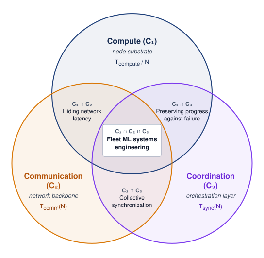

1 Introduction

Purpose

Fleet stack focus for this chapter.
Why are single-machine engineering principles insufficient for machine learning at fleet scale?
Machine learning at scale has a physics of its own. On one node, performance is often governed by the memory wall: data must reach the accelerator fast enough to keep the math busy. Scaling laws explain why one node stops being enough, because model quality improves predictably but sublinearly with compute, data, and parameters, so each further gain demands a larger fleet. In a distributed cluster, the memory problem stretches across machines. Data must move through network links between racks, and the slowest shared crossing can limit the entire job. Hardware failures also change character. A failure that stops one local training run can stall a whole distributed job when thousands of workers must advance together. This discontinuity explains why mastery of single-machine ML is no longer sufficient. A faster device may finish its local work sooner yet spend the saved time waiting for other machines. Adding devices can increase capacity while creating more shared work to coordinate and more components to recover. Serving introduces another consequence: spare capacity is useful only if requests can reach it within their deadlines. The engineering decision must therefore account for the behavior of the whole fleet. That wider boundary also amplifies societal impact because these systems may serve billions of users. Bias in any model can cause harm, but bias in a widely reused foundation model can propagate across many downstream systems. In C³ terms, compute, communication, and coordination turn algorithmic choices into questions of physical topology, fault tolerance, security, and governance.
Learning Objectives
- Explain why leaving one machine shifts the binding constraint from local memory to the network, energy, and routine failure
- Explain how empirical scaling laws drive fleet growth and where breakdown conditions bound compute-optimal allocation
- Diagnose fleet-scale distribution risks using reliability gaps, consistency-availability trade-offs, communication intensity, and routine failure rates
- Explain how Compute, Communication, and Coordination extend the Data-Algorithm-Machine lens for production fleets
- Apply the Fleet Law to separate a training budget’s useful compute from its communication and coordination overhead
- Explain how the fleet stack connects infrastructure decisions to deployment and governance constraints
Explore the concepts in this chapter
The volume’s concept map, opened on this chapter. Select a concept to read how it connects to ideas in other chapters. Open the full map ↗
1.1 The Scale Moment
Machine learning on a single accelerator is governed by local memory hierarchy and arithmetic intensity, the physics of silicon. The boundary of single-machine systems appears when that local machine is no longer the system. As models move from research prototypes to global services, the binding constraints move outward into racks, networks, power delivery, and recovery machinery. That change is not a smooth extrapolation; it is the scale moment, the physical and operational transformation that occurs when models encounter three recurring walls: memory, network, and energy. On one accelerator the memory wall often binds; after distributing a communication-intensive workload across thousands of nodes, the network wall can replace local memory as the primary performance bottleneck. Its hard limits are speed-of-light latency and bisection bandwidth, the aggregate bandwidth across the narrowest cut that splits the fleet into two equal halves. Adding workers does not raise that bound, so a tightly coupled job whose traffic must cross the cut stops gaining speed once the cut saturates. Serving billions of users can then encounter the energy wall, making thermodynamic efficiency a first-order engineering requirement. Crossing those walls also opens a reliability gap, making hardware failure a routine event rather than a rare exception.
A synchronous distributed training step gives this change a concrete form. Each worker computes part of the update, exchanges model information with other workers, and waits until the required participants can advance together. These activities give the book its C\(^3\) lens: Compute is local execution, Communication moves data between workers, and Coordination keeps their progress and state consistent, including after failures, across those resource limits. The Fleet Law expresses the corresponding time budget. Dividing a fixed workload across more devices can shorten local computation, but the step also pays for communication and coordination, less whatever work can overlap. Faster accelerators help only when the remaining costs allow the saved compute time to shorten the whole step.
This book assumes familiarity with single-machine training, inference, and accelerator memory. Readers who want to refresh that foundation should begin with The D·A·M Taxonomy, which restates it in reference form. The appendix covers the Data · Algorithm · Machine (D·A·M) lens that organizes single-machine diagnosis, the iron law, the Roofline Model and its arithmetic-intensity boundary, the accelerator memory hierarchy, the memory cost of training state per parameter, and the arithmetic of transformer layers. The book’s aim is to develop engineering judgment across infrastructure, distributed execution, deployment, and governance, so that a local improvement can be evaluated against the behavior of the whole fleet. This chapter builds that judgment in the order a fleet engineer meets the problem. It first traces how far training compute and cluster size have grown and what changes when a job leaves one machine. It then turns to the empirical scaling laws that keep driving that growth, the physical, logical, and societal constraints that distribution imposes, and the C\(^3\) taxonomy and Fleet Law that diagnose where a distributed step loses time. It closes with the fleet stack, an eight-row layered map of the fleet that locates each cost in the architecture, and three recurring workloads that test how the dominant cost changes. Parallelism, communication, and recovery techniques appear here only by name. The task in this chapter is to identify the constraint each one must address, and later chapters develop the mechanisms.
Between 2012 and the mid-2020s, public and third-party estimates place training compute growth from roughly \(10^{18}\) FLOPs for AlexNet to approaching \(10^{25}\) FLOPs for leading large models, seven to eight orders of magnitude. The difference is qualitative, not merely quantitative. A workload that once fit on two GPUs now spans tens of thousands of accelerators. Recent capability leaps have repeatedly come from applying computation at previously impractical scales, and the empirical scaling laws examined in section 1.3 explain why organizations keep paying for each further order of magnitude.
This growth unfolded across a sequence of landmark models. AlexNet trained on two GTX 580 GPUs for approximately 5–6 days (Krizhevsky et al. 2012). BERT required 64 Tensor Processing Unit (TPU)1 chips for 4 days, roughly 6,144 chip hours (Devlin et al. 2019).
1 Tensor processing unit (TPU): Google’s custom application-specific integrated circuit (ASIC) for machine learning, whose matrix units are systolic arrays, grids of multiply-accumulate cells that pass data between neighboring cells (Jouppi et al. 2017). At fleet scale, the inter-chip network matters as much as the array: TPU v4 joins its chips with an optically reconfigurable interconnect, so the topology of the network, not only the speed of each chip, determines how well many accelerators cooperate (Jouppi et al. 2023).
GPT-3 consumed an estimated 3.14 × 10²³ FLOPs during training (Brown et al. 2020). A single A100, a generation newer than the V100 GPUs that trained it, would need about 32 years to perform that work even at its full 312 TFLOP/s peak, which is the plainest answer to why one node is no longer enough. A later carbon accounting instead pairs the budget with 10,000 V100 GPUs sustaining about 24.6 TFLOP/s each (roughly 20 percent of the V100’s peak arithmetic rate) for roughly 15 days of training (Patterson et al. 2021). The gap between that delivered rate and the datasheet peak raises a question this book keeps returning to, namely how much of each accelerator a fleet actually puts to use. PaLM trained on 6,144 TPU v4 chips for 50 days and then on 3,072 for 14 days more, consuming approximately \(10^{24}\) FLOPs (Chowdhery et al. 2022). OpenAI’s GPT-4 report did not disclose model size, training hardware, or training compute, so the GPT-4-class scenario in this section should be read as illustrative rather than a published configuration (OpenAI et al. 2023). These examples sit within the rapid training-compute growth trend documented by earlier compute-trend studies (Amodei and Hernandez 2018; Sevilla et al. 2022). Together, these landmarks show training budgets moving from single-machine experiments into distributed systems where hardware count, wall-clock time, and operational coordination are part of the model design (table 1).
| Model | Year | GPUs/TPUs | Training time | Estimated FLOPs |
|---|---|---|---|---|
| AlexNet | 2012 | 2 GPUs | 5–6 days | ~\(10^{18}\) |
| BERT-Large | 2018 | 64 TPUs | 4 days | ~\(10^{20}\) |
| GPT-3 | 2020 | 10,000 V100 GPUs (run est.) | ~15 days | 3.14 × 10²³ FLOPs |
| PaLM | 2022 | 6,144 TPUs | ~64 days | ~\(10^{24}\) |
| GPT-4-class scenario | 2023 | ~25,000 GPUs (illustrative) | ~100 days (illustrative) | ~\(10^{25}\) scenario |
Epoch AI’s database of notable models records, for each training run it can document, the compute the run consumed together with how many accelerators it used and for how long (Epoch AI 2026). Plotted run by run, training compute climbs steadily on a logarithmic scale, and it separates early single-node vision models from multi-node transformer training (figure 1, panel a). Because training compute is the product of the accelerator count, the training duration, and the rate each accelerator delivers, the same records also show where the growth came from. Across the 146 runs from 2012 through 2024 that report all three, compute grew about 3.9× per year. The accelerator count grew 1.6× per year, the duration 1.3×, and the delivered rate per accelerator, which folds in both faster hardware and better utilization, 2× (figure 1, panel b). A higher delivered rate per accelerator supplied roughly half of the exponential. More accelerators running for longer supplied the other 51 percent, and that half is the fleet’s to deliver.

The language-model points pull away from the vision points because compute demands escalated sharply as transformer architectures replaced convolutional pipelines. Landmark frontier runs grew their accelerator counts faster than the average run, roughly doubling every year (figure 2), a rate that quickly outpaced what any single node could host.

Across the four-order-of-magnitude climb charted in figure 2, accelerator counts rise from two GPUs for AlexNet to 16,384 H100 GPUs for Llama 3 along an annual doubling trajectory (\(\sim 2\times\) per year). The one estimated point is GPT-3’s, placed at the size of the Microsoft supercomputer built for OpenAI in 2020, more than 10,000 GPUs (Langston 2020). This empirical trajectory is the foundation of the scale moment, because leading models have required far larger accelerator fleets than earlier deep-learning landmarks. The curve alone, however, does not explain which constraint breaks first. Large language-model training, recommendation serving, and federated mobile learning all encounter fleet scale, but each stresses a different part of the system.
Lighthouse 1.1: Lighthouse archetypes at scale
These archetypes turn the growth curve into an engineering question. The same increase in accelerator count can produce a network wall for a large language model split across devices, either within each layer (tensor parallelism) or by assigning consecutive groups of layers to different devices as pipeline stages (pipeline parallelism). It can produce a sparse-routing coordination bottleneck for a recommendation model whose embedding tables are spread across hundreds of nodes, or a per-device compute ceiling for federated learning across millions of phones, which carries that diversity of constraint regimes beyond the data center.
↪ Data, tensor, and pipeline parallelism, and the traffic each places on the fabric, are developed in Distributed Training.
↪ Federated rounds across millions of devices, where dropouts, stragglers, and per-device budgets bind, are developed in Federated Learning Systems at Scale.
Moving from one machine to many changes the governing physics of the system, not merely its device count. A single node is bound locally by the memory wall between its accelerators and their high-bandwidth memory, and it has no peers to wait for. A fleet executes across a shared network fabric under a scheduler that places and recovers the job, which exposes the workload to the network wall, to stragglers, and to routine node failures (figure 3).

At fleet scale, the binding constraint may shift from local silicon to the network fabric, while resilience joins optimization as a primary concern. The unit of compute is no longer a single server but a machine learning fleet, an interconnected distributed system designed to act as a coherent engine.
Definition 1.1: Machine learning fleet
Machine learning fleet is a distributed collection of compute devices, storage, and networks managed together to train or serve machine learning models.
- Significance: In tightly coupled synchronous training, the total time \(\Time\) can be governed by the slowest worker (straggler). Sustaining that workload requires balancing bisection bandwidth (\(\BisectionBandwidth\)) against aggregate compute capacity (\(\PeakRate\)). Serving fleets and heterogeneous edge fleets impose different communication and coordination requirements.
- Distinction: The fleet is the unit of engineering, but its workers need not all advance together. Synchronous tight coupling makes a training job depend on a shared step barrier; serving replicas can process separate requests, and federated devices can participate intermittently. The workload determines the required coupling and recovery behavior.
- Common pitfall: Treating an ML fleet as “just more servers” overlooks shared network, placement, and recovery constraints. A tightly coupled data-center fleet behaves as one machine, the warehouse-scale computer of section 1.2.2; an edge fleet extends the engineering boundary to devices outside that managed facility.
At the scale of thousands of GPUs, failure modes appear that a single GPU never encounters. A network partition can leave a synchronous job hung at a collective (an operation, such as a gradient exchange, that every worker must join) until a timeout aborts it, and in loosely synchronized designs it can let groups of workers drift apart. Stragglers (workers that process data slower than peers due to hardware variation or thermal throttling) can bottleneck entire training runs. Even infrequent component failures accumulate across a large fleet, so long training jobs must expect interruptions.2 Systems must preserve recoverable state frequently enough to bound the work lost at each interruption.
2 Hardware failure rates at scale: The arithmetic below uses an assumed per-GPU mean time to failure and independent failures to illustrate how interruption frequency grows with fleet size. Production job interruptions include software, networking, and maintenance as well as accelerator faults. Meta’s Llama 3 report provides an observed example of this broader interruption category (Dubey et al. 2024); it does not establish a universal annual GPU failure rate.

A 25,000-GPU job fails 25,000 times as often as one GPU.
The interruption cadence follows from simple arithmetic. Consider a hypothetical GPT-4-class training run on A100-class hardware, a cluster of 25,000 GPUs running for 100 days, values that follow a third-party estimate (Patel and Wong 2023) rather than an OpenAI disclosure (OpenAI et al. 2023). With an assumed per-GPU mean time to failure (MTTF) of 50,000 hours and independent failures, the system mean time between failures (MTBF) is the per-GPU MTTF divided by the GPU count, about 2 hours, or roughly 12 interruptions per day.
↪ The failure-rate arithmetic that turns a per-device MTTF into a job’s interruption cadence, checked against production failure records, is developed in The Mathematics of Inevitable Failure.
Production runs show a similar cadence. Meta’s Llama 3 405B pretraining on 16,384 H100 GPUs recorded 419 unexpected interruptions over a 54-day snapshot, about one every 3 hours, from software, network, and host faults as well as GPU faults (Dubey et al. 2024). At that rate, a job that saved its state only every few hours would rarely reach its next save, and manual restart cannot keep pace, so recovery must be automated and designed into the system from the outset (Cluster MTBF calculation follows how this run recovered).
Organizations answered these challenges with purpose-built fleets whose defining component is the network as much as the accelerator. Meta’s Research SuperCluster, announced in 2022, was designed to reach 16,000 NVIDIA A100 GPUs connected by 200 Gb/s InfiniBand3 links (AI 2022). Google’s TPU v4 pods join 4,096 chips delivering 1.1 EFLOP/s of aggregate peak compute (Zu et al. 2024). Later Azure AI data center announcements describe training fabrics of tens of thousands of GPUs (Microsoft 2025). Each accelerator’s share of that aggregate compute must exchange its results through links of a few hundred gigabits per second.
3 InfiniBand: A data-center interconnect whose defining feature for ML is remote direct memory access (RDMA), which bypasses the OS kernel to move data directly between application memory on different machines at microsecond-scale latency. HDR InfiniBand provides about 25 GB/s line-rate bandwidth per link and NDR about 50 GB/s; that per-link bandwidth, relative to the computation each worker performs between exchanges, decides whether large-model training is compute-bound or communication-bound. RDMA-capable Ethernet (RoCE) now offers comparable line rates.
The scale moment establishes why exponential growth in compute demand forces some ML systems beyond any single machine, making the network fabric a potential bottleneck and component failure routine over long runs. The next question is how to organize the engineering response. Established distributed-systems techniques remain essential, but global barriers and large shared model state change their costs and determine which recovery and consistency mechanisms apply. Tracing how the layers of one machine map onto a fleet, starting with how sharply the links between servers fall below the bandwidth inside one, makes those dependencies explicit.
Self-Check: Question
A team scales a well-tuned training run from 8 accelerators to 25,000. Per-device arithmetic throughput stays constant, yet end-to-end wall-clock time per step roughly doubles, and the job now experiences hardware-induced interruptions every few hours. Applying the scale-moment analysis, which explanation is most consistent with the evidence?
- The arithmetic units on each accelerator are the bottleneck, so the team should enable lower precision to double local matrix throughput.
- Distribution has exposed additional fleet costs and routine component failures; communication, straggler waiting, and recovery are candidate causes of the longer steps, requiring correlated measurements.
- The kernel compiler is failing to fuse operations at fleet scale, increasing redundant high-bandwidth memory traffic on each device.
- The input data loader has become single-threaded, starving all 25,000 GPUs uniformly.
Meta reported 419 unexpected interruptions during a 54-day snapshot of Llama 3 training on 16,384 H100 GPUs, averaging one interruption about every three hours. Explain why this cadence motivates automated recovery rather than manual restart after every interruption.
True or False: If individual data center accelerators achieve a 99.9% annual uptime reliability, a synchronous training job requiring 10,000 such accelerators simultaneously will experience hardware failures only a few times per year.
A frontier model training run utilizes 25,000 independent GPUs, where each GPU has a modeled mean time to failure (MTTF) of 50,000 hours. Under an exponential independent failure model, what is the expected system MTBF, and approximately how many job interruptions will occur per 24-hour day?
- System MTBF is 2.0 hours, resulting in approximately 12 interruptions per day.
- System MTBF is 50 hours, resulting in approximately 0.48 interruptions per day.
- System MTBF is 50,000 hours, resulting in approximately 0.00048 interruptions per day.
- System MTBF is 24 hours, resulting in exactly 1 interruption per day.
Order the following landmark training milestones by the number of accelerators utilized during training, from smallest to largest: (1) PaLM (6,144 TPUs), (2) AlexNet (2 GPUs), (3) Llama 3 (16,384 GPUs), (4) BERT-Large (64 TPUs), (5) Megatron-LM (512 GPUs).
1.2 From Single Node to Fleet
Inside one H100 server, NVLink moves tensors between accelerators at 450 GB/s in each direction per accelerator. Once a training job spans racks, the same tensors leave through an InfiniBand NDR port at 400 Gb/s (50 GB/s) in each direction, a bandwidth step down of roughly 9× for an accelerator served by one such port. That step illustrates a general pattern. The layered structure of an ML system persists across scale, while the physics at each layer changes. The fleet stack names the fleet’s layers by grouping them into four bands, Infrastructure at the bottom, then Distribution, Serving, and Governance at the top, with two rows in each (figure 4). At the bottom, the hardware substrate of one node becomes the Infrastructure band, an RDMA fabric spanning racks. There the binding constraint can shift from the memory wall to the network wall as network congestion and message-passing latency consume a growing share of step time. One layer up, system software (a single CUDA runtime managing PCIe direct memory access (DMA)) becomes the Distribution band. This band holds the NVIDIA Collective Communications Library (NCCL) and RDMA libraries that coordinate thousands of processes across the fabric, together with the schedulers that place distributed jobs and the recovery machinery that restarts them. Efficient data movement inside each node remains a prerequisite, because a fleet of underutilized nodes only multiplies the waste.

The upper bands add responsibilities rather than replace the familiar software layers. The ML framework (PyTorch or JAX executing a training loop on one node) remains part of model execution. The Serving band adds request handling and deployment pipelines that manage rolling releases across the fleet. Applications also remain, while the Governance band sets security, robustness, sustainability, and responsible AI requirements for their operation. The full stack and its eight rows, the map that organizes the rest of this book, return in section 1.6. The stack identifies where a design decision belongs; C\(^3\) identifies how that decision affects execution time.
A map of layers does not by itself explain why the same decision behaves differently once it spans a fleet. Three changes separate a fleet from a larger server: synchronous coupling turns independent tasks into a shared step, the facility itself becomes the computer, and communication can dominate the step. A fourth change, routine failure, was quantified at the scale moment; its availability model returns with the other constraints of scale in section 1.4.1. Archetype A (GPT-4/Llama-3), the large-language-model workload of the book’s canonical roster (section 1.6.1), runs on a reference cluster of NVIDIA H100 accelerators and makes each change concrete where a chapter needs it.
1.2.1 Independent tasks vs. synchronous training steps
When one worker in a MapReduce job fails or slows down, the scheduler can retry that task alone while the rest of the cluster keeps making progress. When one worker in a synchronous training job slows by 10 percent on the critical path, every other accelerator waits at the step barrier and the whole job slows by nearly 10 percent. Many distributed systems isolate work into tasks or requests so that one failure need not stop unrelated work: MapReduce (Dean and Ghemawat 2004) partitions an input into retryable tasks, Apache Spark (Zaharia et al. 2016) processes data-parallel stages with explicit shuffle boundaries, and a web microservice handles requests whose failures can be isolated. Search engines and banking databases use other forms of replication, partitioning, and coordination; they are not uniformly independent or asynchronous. The useful contrast is therefore between failure domains and coupling patterns, not between “traditional” and ML systems.
Large synchronous training jobs operate under synchronous tight coupling. Parameter-server architectures (Li et al. 2014) and collective runtimes manage distributed state, but synchronous optimization updates a large shared model state across thousands of accelerators every few hundred milliseconds rather than completing independent one-shot tasks. At each synchronization point, progress can depend on the slowest participating worker, and communication-heavy partitions can also become bisection-bandwidth bound because large gradient or activation tensors cross the network every step. These properties do not invalidate established recovery techniques; they increase recovery cost and restrict which replication, re-execution, and consistency strategies preserve useful training progress.
↪ The barrier that makes every update wait for every required contribution, and the failure modes it creates, are developed in Barrier semantics and failure modes.
The two execution pathways differ at the point of failure (figure 5). In MapReduce, a failed map task is retried on its own while its peers complete. In synchronous data-parallel training, every worker holds a full copy of the model and processes a different slice of each batch. Before the shared parameter update can occur, every worker must contribute its gradient to an AllReduce, a collective operation that combines the gradients of all workers and returns the result to each of them. A slow map task can delay downstream reduction and job completion, but other map tasks finish without waiting; in synchronous training, by contrast, healthy workers sit idle whenever a straggler delays the collective.

The collective barrier in figure 5 is why MapReduce-style localized task re-execution cannot be transferred directly to tightly coupled training. When all workers advance a single shared parameter step, recovery must restore mutually consistent model, optimizer, and input state across every participating node before coordinated execution can resume.
↪ Coordinated checkpointing, which captures that mutually consistent state so that recovery need not search for it, is developed in Checkpoint coordination patterns.
Checkpoint 1.1: The fleet mindset
These questions check whether the fleet mindset is clear:
1.2.2 The shift to the warehouse-scale computer
Once a single training job spans thousands of accelerators across dozens of racks, a facility’s cooling loops, power distribution, and optical spine can cap step throughput long before any individual chip reaches its arithmetic limit. A tightly coupled data-center fleet therefore demands the warehouse-scale computer (WSC)4 perspective. Where a machine-centric view treats the data center as a building that houses many separate servers, the warehouse-scale view treats the data center itself as one computer. Single-node abstractions then map directly onto distributed infrastructure: the network fabric functions as the system bus, distributed storage serves as the local disk, and the fleet orchestrator acts as the operating system.
4 Warehouse-scale computer (WSC): Barroso et al. (2019) frame the data center itself as the computer. For ML fleets, power delivery, cooling topology, optical network layout, and bisection bandwidth become first-order constraints; a 100 MW facility can limit training throughput more than any single accelerator’s TFLOP/s.
For this data-center regime, the engineering boundary extends from local execution to the shared power, network, and recovery systems that sustain the entire facility. The warehouse-scale computer is the standard design for large models. Wafer-scale engines, single processors built from an entire silicon wafer rather than one reticle-sized die, instead attempt to collapse this entire hierarchy into a single piece of silicon, trading the modularity of a distributed cluster for the extreme bandwidth of on-chip communication (Wafer-scale engines). Both designs answer the same constraint, the cost of moving data between chips, from opposite directions.
1.2.3 Communication dominance and the network wall
On a single GPU, a dense training step keeps its gradients in local memory, so matrix multiplications dominate step time and inter-node communication is zero. Once that workload spans racks in a warehouse-scale computer, every step must exchange gradients or activations across inter-server links before parameters can update, which can make communication the dominant cost and expose the network wall of the scale moment.

Ring AllReduce moves about twice the gradient per step; 16-bit gradients halve it.
Distributed data-parallel training synchronizes gradients across workers after each batch. For a model with 175B parameters, FP32 gradients occupy about 700 GB before any collective algorithm is applied. Ring AllReduce arranges the AllReduce exchange among neighbors in a logical ring. With \(\DeviceCount\) workers, each worker sends roughly \(2(\DeviceCount-1)/\DeviceCount\) times the gradient tensor size and receives the same amount across the reduction and distribution phases (Ring AllReduce derives this factor). For large \(\DeviceCount\) the factor approaches two, so each worker moves about twice the FP32 gradient per step, and half that when mixed-precision training exchanges 16-bit gradients. Network traffic therefore depends on precision, worker count, collective implementation, and partitioning. On slower interconnects or partitions with little computation per communicated byte, it can consume a large fraction of each iteration rather than a negligible one. Notebook 1.1 later converts the 16-bit volume into seconds of exposed transfer per step.
↪ The \(\MessageStartupLatency\)-\(\LinkBandwidth\) communication model, with the per-interconnect latency and bandwidth parameters that turn a link’s specifications into a predicted transfer cost, is developed in The \MessageStartupLatency-\LinkBandwidth Communication Model.
That share grows as a fixed workload spreads across more devices, because each worker’s local computation shrinks while its gradient exchange does not. Across illustrative tiers from 8 to 4,096 GPUs, compute can fall from 75 percent of the step to 20 percent as communication widens (figure 6). The fractions are assumed regimes rather than measurements. Gradient size, local batch size, partition topology, and overlap determine where the critical path actually lies, so it must be measured at each scale.

This exposed transfer cost explains why distributed training systems optimize communication so aggressively. Distributing work also distributes state that must move or be kept consistent. Horovod, for example, runs Ring AllReduce and fuses many small gradient tensors into fewer large transfers, so that the fixed cost of starting each exchange is paid fewer times (Sergeev and Balso 2018). Splitting each layer across devices, as Megatron-LM does with tensor parallelism (Shoeybi et al. 2019), and sharding optimizer state across workers, as ZeRO does (Rajbhandari et al. 2020), trade per-device memory for different traffic patterns. Gradient sparsification (sending fewer gradient bytes) and 3D parallelism (partitioning data, tensor, and pipeline dimensions across different fabric tiers) change how much data moves and where it moves. Distributed Training develops these partitioning methods. Overlapping a transfer with independent computation instead reduces exposed waiting time without changing how many bytes move. The design decision at this stage is which cost prevents progress; selecting a particular mechanism requires the workload and fabric models developed later.
1.2.4 Communication intensity (the CI ratio)
If arithmetic intensity governs where a single accelerator stalls, communication intensity (CI) governs where a fleet stalls. On a single accelerator, the Roofline Model determines whether a kernel is compute-bound or memory-bound. At fleet scale, the same analysis extends to the network.
Equation 1 defines communication intensity as the ratio of data moved across the network to the operations performed locally. The numerator counts bytes and the denominator counts operations for the same worker and interval, such as one training step; the ratio therefore has units of bytes per operation. A comparison must also state whether it counts sent bytes, received bytes, or both:
\[\CommunicationIntensity = \frac{\NetworkTrafficVolume}{\Operations} \tag{1}\]
where \(\NetworkTrafficVolume\) is the number of bytes the worker moves across the network and \(\Operations\) is the number of operations it performs locally in the same interval.

Past the fabric balance point, step time grows with communication intensity.
Low communication intensity describes compute-heavy workloads whose accelerators spend most of their time doing math, so scaling is comparatively easy. High communication intensity describes workloads whose bytes per operation approach or exceed the hardware’s fabric balance, the ratio of per-worker network bandwidth to peak arithmetic throughput. Past that balance point, network transfers take longer than the local computation they accompany. Splitting a fixed batch across still more accelerators shrinks the local operations \(\Operations\) per worker while leaving gradient traffic \(\NetworkTrafficVolume\) in place or adding collective overhead, which raises \(\CommunicationIntensity\) further and can make the step slower rather than faster. The boundary is configuration-specific because it depends on both local compute throughput and effective network bandwidth.
The 175B-parameter step gives the ratio a concrete value. Suppose each data-parallel worker processes 8,192 tokens per step, four full-length sequences. Its local work is about six FLOPs per parameter per token, or \(8.6 \times 10^{15}\) FLOPs, while its 16-bit ring AllReduce moves about 700 GB. The communication intensity is therefore about \(8 \times 10^{-5}\) bytes per FLOP, one byte for roughly every 12,000 FLOPs. An A100 on one 200 Gb/s InfiniBand link has a fabric balance of \(8 \times 10^{-5}\) bytes per FLOP, its link bandwidth divided by its peak arithmetic rate. The step sits near that balance point, so at line rate and peak throughput the exchange takes about as long as the computation, and without overlap it roughly doubles the step. The ratio describes workload demand; the fabric and execution schedule determine how much of that demand delays progress.
↪ The communication-computation ratio, and the threshold beyond which communication can no longer hide behind computation, are developed in The communication-computation ratio.
Communication costs, together with the recovery costs quantified at the scale moment, describe how a fleet executes work. Neither explains what drives the relentless growth in fleet size, or how much work a model should receive. Both answers lie in empirical relationships between model quality and resource investment, relationships that have made warehouse-scale infrastructure an economic necessity rather than an engineering luxury.
Self-Check: Question
Which responsibility assignment matches the fleet stack described in this section, while retaining ML frameworks and applications as parts of the system?
- Infrastructure handles request admission; Distribution sets fairness policy; Serving supplies network links; Governance runs gradient collectives.
- Infrastructure places training jobs; Distribution cools accelerators; Serving defines privacy requirements; Governance answers inference requests.
- Infrastructure supplies accelerators and fabrics; Distribution handles collectives, job placement, and recovery; Serving handles requests and deployment; Governance sets security and responsible-operation requirements.
- Infrastructure supplies accelerators and fabrics; Distribution handles collectives; Serving owns training-job scheduling and recovery; Governance replaces applications.
Contrast the impact of a 10% performance slowdown (straggler) on a single worker node in a 1,000-worker MapReduce job versus a 1,000-accelerator synchronous ML training job. Explain why the two architectures respond so differently.
True or False: Because MapReduce and synchronous distributed ML both distribute data across thousands of nodes, an ML training cluster can adopt MapReduce’s straggler-mitigation technique of simply re-executing lagging tasks in parallel on spare nodes without pausing other workers.
Under the Warehouse-Scale Computer (WSC) perspective required for the ML fleet, the data center is treated as the computer: the orchestrator acts as the operating system, distributed storage acts as the local disk, and the network fabric acts as the ____.
When scaling an autoregressive model from a single GPU to a 10,000-accelerator cluster, an engineer observes that the local CUDA arithmetic kernels execute without modification. Why does distributed execution nonetheless introduce failure modes that never occur on a single machine?
- Accelerators in large clusters automatically switch to lower-clock power states that disable floating-point exception traps.
- Operating systems disable host-to-device PCIe DMA on multi-node clusters, forcing all memory through unbuffered network sockets.
- Multi-GPU compilers alter the underlying mathematical definitions of GEMM operations to save bisection bandwidth.
- Distributed coupling introduces network partitions that cause state divergence, stragglers that stall global synchronization barriers, and collective communication deadlocks.
A performance engineer profiles two distributed training jobs running on the same 1,024-GPU cluster connected by 200 Gb/s InfiniBand. Workload Alpha transfers 10 MB of gradient data per step while executing \(10^{14}\) FLOPs locally per GPU. Workload Beta transfers 1 GB of gradient data per step while executing \(10^{13}\) FLOPs locally per GPU. Using the communication intensity (\(\CommunicationIntensity\)) ratio, how will these workloads respond as additional GPU nodes are added to the cluster?
- Workload Alpha will scale poorly because its low CI indicates the GPU compute units are starving for network data.
- Workload Beta has 1,000 times higher network bytes per local FLOP and is more exposed to communication limits; actual scaling also depends on effective bandwidth and partitioning.
- Both workloads will achieve identical linear scaling because CI measures single-device memory bandwidth rather than inter-node network traffic.
- Workload Beta will scale more efficiently because higher network byte volume improves the link utilization of optical InfiniBand transceivers.
1.3 AI Scaling Laws
The seven to eight orders of magnitude of training compute traced at the scale moment, from AlexNet to GPT-4-class estimates near \(10^{25}\) FLOPs, were not an accident of ambition. Each order-of-magnitude increase in compute demanded a corresponding expansion of the machine learning fleet, and organizations paid for those expansions because the return on them had become predictable. Predictable is not the same as free. Measured learning curves estimate the quality a training budget buys, while device throughput, execution efficiency, and the completion deadline determine how much fleet capacity that budget requires.
Rich Sutton’s “bitter lesson” articulated the underlying principle: performance in machine learning is primarily driven by applying general methods at large scale rather than encoding human knowledge into algorithms (Sutton 2019). Scaling laws formalize this observation quantitatively. Model loss improves sublinearly as a power-law function of compute, dataset size, and parameters, \(\ScalingLawLoss(\ScaledResource) \propto \ScaledResource^{-\ScalingExponent}\) for a resource \(\ScaledResource\) (stated in full, with its irreducible floor, in theorem 1.1) (Kaplan et al. 2020; Hoffmann et al. 2022). Each equal-sized loss improvement therefore requires disproportionately more resources, a systems consequence this book later names as the empirical scaling law. Each scaling dimension (parameters, data, and compute) interacts with infrastructure constraints differently, making multi-dimensional efficiency optimization essential at production scale.
1.3.1 Empirical evidence for scaling laws
Over the longer history of AI, the growth rate of training compute broke sharply upward around 2010 (Sevilla et al. 2022). A fit to Epoch AI’s records of notable models gives growth of about 1.5× per year before 2010, close to Moore’s law, and of about 4.3× per year in the deep learning era (figure 7). The scale moment already decomposed that post-2012 climb into accelerator count, run duration, and delivered rate per accelerator (figure 1, panel b). When compute demand outpaces single-chip hardware gains by that margin, misallocating a training budget becomes prohibitively expensive, turning empirical scaling laws from a research curiosity into an engineering necessity.

Kaplan et al. (2020) demonstrated that transformer-based language-model loss follows predictable power-law relationships with model parameters, dataset size (measured in tokens), and total computational budget. The result was not a license to increase every dimension blindly; it showed that model quality depends on coordinated allocation across those resources, a point later sharpened by Chinchilla’s compute-optimal scaling analysis (Hoffmann et al. 2022).
Across parameter scales from \(10^3\) to \(10^9\), larger models are also more sample-efficient, reaching any target loss with substantially fewer training tokens (figure 8, panel a). Compute-efficient training therefore stops far short of full convergence, because an early-stopped larger model attains the target loss with less total compute than a smaller model trained to its plateau (panel b).

Because each equal loss improvement costs disproportionately more, allocation grows more consequential as budgets grow. The question is how to divide a budget between the size of the model and the training data it consumes.
1.3.2 Compute-optimal resource allocation
A team that spends a fixed training-compute budget making a model twice as large while halving its training tokens5 ends up with a higher-loss model that also costs twice as much memory and bandwidth to serve. Empirical studies of large language models (LLMs) show that, for a fixed computational budget and within the studied scaling regime, balancing model size and dataset size minimizes training loss.
5 Tokens: Subword units produced by algorithms like byte-pair encoding, which iteratively merges the most frequent character pairs in a corpus. Token vocabulary size creates a direct systems trade-off: larger vocabularies can reduce sequence length for some languages and domains, but they expand the embedding table roughly in proportion to vocabulary size. GPT-3 used a 50,257-token vocabulary; moving to 100K+ tokens in newer models therefore trades tokenization efficiency against additional embedding memory.
6 FLOPs vs. FLOP/s: FLOPs denotes total computational work (operations performed), while FLOP/s denotes hardware throughput (operations per second); confusing the two leads to incorrect cost estimates. GPT-3 required 3.14 × 10²³ FLOPs of work; an A100 delivers 312 TFLOP/s of throughput. Dividing work by peak throughput gives ideal wall-clock time, the roughly 32 years on one A100 computed at the scale moment. Actual time is approximately \(\text{work}/(\EfficiencyHw \PeakRate)\), where the hardware utilization \(\EfficiencyHw\) is the achieved fraction of peak throughput, so utilization below one multiplies ideal time by \(1/\EfficiencyHw\).
Holding the budget fixed and varying model size traces a U-shaped IsoFLOP curve of training loss against parameter count, whose valley marks the best model size for that FLOP budget (figure 9, panel a). As the budget grows, the valley moves toward larger models, and the optimal parameter count and the optimal number of training tokens rise along coordinated power laws (panel b), so compute-optimal training advances model size and token volume in tandem. Projected to a larger budget, the fits call for 63B parameters trained on 1.4T tokens, about \(5.3 \times 10^{23}\) FLOPs in total,6 which is how compute-optimal frontiers guide resource allocation before cluster execution begins.

Within the studied regime, the Chinchilla result indicates that model size and training tokens should scale approximately proportionally for compute-optimal training, with a ratio on the order of 20 training tokens per parameter (Hoffmann et al. 2022). The allocation is a trade along a fixed product. Training a dense transformer costs about \(\TrainingCompute \approx 6\Parameters \DatasetSize\) FLOPs for \(\Parameters\) parameters and \(\DatasetSize\) training tokens, two per parameter per token in the forward pass and four in the backward pass (equation 4). A fixed budget therefore fixes the product of model size and tokens, and the ratio chooses the point along it. The projection in figure 9, 1.4T tokens for 63B parameters, or about 22 tokens per parameter, sits close to that ratio. This corrected earlier guidance that favored making models larger while training them on comparatively fewer tokens. The objective is loss at a fixed training-compute budget. A deployment that serves the model repeatedly must also account for inference cost; its preferred allocation need not minimize training compute alone.
When sizing GPT-3, the authors used scaling-law extrapolations to choose model size and training data (Brown et al. 2020; Kaplan et al. 2020). They trained an established transformer architecture with 175B parameters and approximately 300 billion tokens, about 1.7 tokens per parameter. Against the roughly 20 tokens per parameter of the later Chinchilla results, that point was undertrained relative to compute-optimal token allocation (Hoffmann et al. 2022).
The practical decision is how to divide a fixed budget among model size, data, and training duration, and a compute-optimal allocation answers it only in useful computational work. Converting that work into elapsed time requires a separate systems model. Communication can grow relative to per-worker computation as a fixed workload is split more finely, creating bandwidth bottlenecks that reduce effective utilization. At multi-thousand-GPU scale, utilization depends on partitioning and interconnect. Narayanan et al. (2021) report Megatron-LM runs on 3,072 A100 GPUs at 52 percent of peak device throughput and note that slower interconnects or communication-heavy partitions hinder scaling.
1.3.3 Power-law scaling and operational regimes
Even when a cluster sustains high utilization on a compute-optimal run, scaling parameters and tokens in lockstep works only while both resources remain available and the loss curve stays well above its irreducible floor. Including that floor in the power-law proportionality stated with the bitter lesson explains why the same fleet can enter different operational regimes. The following analysis takes three cuts through these regimes, each with its own fleet consequence. The first cut is how compute and data are allocated, which decides the resource to buy next. The second is where diminishing returns set in with dataset size, which decides when storage and data pipelines matter more than accelerators. The last is when in the model’s lifecycle computation is spent, which decides the part of the fleet, training or serving, that carries the load.
Theorem 1.1: Power-law scaling formulation
\[ \ScalingLawLoss(\ScaledResource) = \ScaleCoefficient \ScaledResource^{-\ScalingExponent} + \IrreducibleLoss \]
where loss \(\ScalingLawLoss\) decreases as resource quantity \(\ScaledResource\) increases, following a power-law decay with rate \(\ScalingExponent\), plus a baseline constant \(\IrreducibleLoss\), the irreducible loss (a constant of the fit, not one of the C\(^3\) labels). Here, \(\ScalingLawLoss(\ScaledResource)\) represents the loss achieved with a resource quantity such as parameters, tokens, or compute; \(\ScaleCoefficient\) and \(\IrreducibleLoss\) are task-dependent constants; and \(\ScalingExponent\) is the scaling exponent that characterizes the rate of performance improvement. A larger value of \(\ScalingExponent\) signifies more efficient performance improvements with respect to scaling.
For a fleet, the exponent is the price list. Halving the reducible term \(\ScaleCoefficient \ScaledResource^{-\ScalingExponent}\) requires multiplying the resource \(\ScaledResource\) by \(2^{1/\ScalingExponent}\), so the smaller the exponent, the larger the multiple of accelerators, tokens, or training time that each further step in quality demands. These power-law predictions find empirical validation in the family of learning curves plotted in figure 10. Across six model scales spanning from 393.2K to 708M parameters, test loss descends predictably as dataset size grows from \(10^7\) toward \(3\times 10^{10}\) tokens, with smaller architectures flattening into parameter-capacity plateaus while larger models sustain power-law error reduction.
Resource-constrained scaling regimes
Those plateaus show why buying more accelerators for a project whose dataset is already exhausted wastes hardware on overfitting, whereas collecting more tokens for a project whose cluster cannot train a larger model strands data in storage. Applying scaling laws in practice is therefore a scarcity diagnosis that asks which resource prevents balanced growth first. Compute budget, data availability, and model size create three regimes with different optimal responses.
In a compute-limited regime, compute scarcity restricts scaling potential despite abundant training data; measured learning curves guide the allocation between model size and training tokens within that budget. In a data-limited regime, computational resources exceed what the available dataset can support, meaning that increasing model size is useful only if validation measurements show that the available data can support additional capacity. Between these extremes lies the optimal regime, where compute and data grow in balance following compute-optimal scaling laws, as DeepMind demonstrated with Chinchilla by outperforming much larger models through proportional scaling of model size and training data (Hoffmann et al. 2022). Recognizing which regime governs a given project prevents common inefficiencies: over-parameterized models with insufficient training data, or under-parameterized models that waste available compute. For the fleet, the diagnosis decides where the next investment goes. A compute-limited project needs accelerator-hours, while a data-limited one gains more from the storage and data pipelines of Data Storage than from additional accelerators.

The second cut through the operational regimes follows the return on additional data as a dataset grows, which decides when buying data stops paying. On log-log coordinates, dataset scaling passes through three regimes (figure 11). In the initial Small Data Region, generalization error lingers near the upper Best Guess Error ceiling. As data volume expands into the central Power-Law Region, error drops sharply along a constant slope where data investment yields predictable returns. Finally, in the Irreducible Error Region, the curve flattens asymptotically against the Bayes noise floor, where further dataset expansion provides negligible gain. The systems consequence is that finite high-quality data, not compute, becomes the binding constraint once a model enters the saturation regime, which is why data efficiency complements brute-force scaling. An observed plateau does not by itself establish that the irreducible floor has been reached, however. Limited coverage, insufficient model capacity, and incomplete optimization can also flatten a learning curve, so the engineering task is to rule out these remediable limits before purchasing more data or compute.
↪ The data wall, and the storage traffic a fleet incurs when it generates, filters, and versions synthetic training data, are developed in The synthetic fuel line.

The third cut follows lifecycle stage, because additional compute can be spent on the foundation run, on adapting the model afterward, or on each request in deployment (figure 12). Pretraining scaling (orange curve) increases the resource investment in the foundation run. Posttraining scaling (blue curve) adapts an existing model through fine-tuning or preference optimization. Test-time scaling (green curve, “long thinking”) spends additional computation on a particular request through intermediate generation, search, or sampling, trading serving latency and throughput for a possible quality gain. Each phase stresses a different part of the fleet. Pretraining is one long, failure-sensitive foundation run whose scaling-law gains must be realized in wall-clock time. Posttraining replaces that single large job with many smaller, coordination-heavy runs. Test-time scaling moves computation into the serving path, where it competes with latency targets. The schematic curves do not establish a universal efficiency ranking among these choices, so the full treatments belong with their workloads. Test-time compute at serving is treated in Test-time compute and the per-request budget. A resource plan must compare measured task improvements and costs before choosing where to spend the next increment of compute.
↪ The multi-model coordination that posttraining alignment runs require is developed in The multi-model coordination problem.

1.3.4 Sustainability and cost implications
GPT-3’s training run alone occupied about 148,000 GPU-days and drew an estimated 1,287 MWh of electricity (Patterson et al. 2021), and later frontier runs use more accelerators for longer. While scaling laws trace a path to lower loss, they also expose rapidly escalating resource demands whose training and deployment costs grow faster than the quality gains they buy.
Where that electricity is generated matters as much as how much is drawn. The same training run can differ by roughly 41× in CO2 emissions depending on grid location, from about 20 g/kWh of CO2 for Quebec hydropower to about 820 g/kWh for Poland coal. The siting of the cluster is therefore a first-order infrastructure decision. Financial cost scales with the same accelerator-days and megawatt-hours, which limits who can do large-scale research at all.
↪ How site selection and grid carbon intensity set the emissions of the same training run is developed in The Scale of Environmental Impact.
7 Scaling law saturation: Power-law relationships with a baseline loss term approach that floor rather than predict unbounded loss reduction. Downstream task utility may also stop improving even while the fitted loss decreases. That gap between loss and utility motivates testing data efficiency or model compression against task utility and resource cost; neither technique guarantees that a genuine information limit can be overcome.
Scaling laws do not guarantee unbounded improvement. Each incremental performance gain must be weighed against its resource cost. As systems approach practical scaling limits, the emphasis shifts from scaling alone to efficient scaling: balancing performance, cost, energy consumption, and environmental impact.7
1.3.5 When scaling laws break down
Doubling a model’s parameter count without expanding its training dataset or interconnect capacity can stall loss improvements even as cluster cost doubles, because power-law fits hold only within the balanced regime in which they were measured. Most breakdowns at those boundaries share one root cause, growth in one dimension that outpaces the others. Hoffmann et al. (2022) show that many large language models were undertrained because model size grew faster than training-token budgets, and that compute-optimal training requires scaling parameters and tokens together. Hardware ceilings belong to the same family, because memory bandwidth, interconnect capacity, and I/O throughput cap how far a larger model can be distributed at all. Each imbalance requires different evidence. Training measurements can reveal an unsuitable optimization schedule. Held-out evaluation can distinguish improved generalization from memorization. Execution traces can reveal whether bandwidth or I/O prevents the fleet from completing the planned work. A lower benchmark loss also does not establish robustness to adversarial or out-of-distribution inputs. Each possible breakdown type pairs with a candidate cause and a representative scenario (table 2). The pairing guides investigation; it does not infer a cause from a plateau alone.
| Dimension scaled | Type of breakdown | Underlying cause | Example scenario |
|---|---|---|---|
| Model Size | Overfitting | Model capacity exceeds available data | Billion-parameter model on limited dataset |
| Training Data Size | Diminishing Returns | Saturation of new or diverse information | Scaling web text beyond useful threshold |
| Compute Budget | Underutilized Resources | Insufficient training steps or inefficient use | Large model with truncated training duration |
| Imbalanced Scaling | Inefficiency | Uncoordinated increase in model/data/compute | Doubling model size without more data or time |
| All Dimensions | Saturation | Exhaustion of learnable patterns in the domain | No further gains despite scaling all inputs |
Checkpoint 1.2: Applying scaling laws
These questions check whether scaling laws are being used as resource-allocation tools:
1.3.6 Combining efficiency with scaling
Data saturation, infrastructure bottlenecks, and diminishing returns set hard limits on what brute-force scaling can achieve. The same constraints, however, point toward solutions along three interconnected dimensions. When compute is the scarce resource, algorithmic efficiency uses techniques such as sparsity and distillation to extract more capability per FLOP. When high-quality tokens run short, data efficiency uses curriculum learning and active selection to extract more information per training example. When the cluster itself stalls on transfers or barriers, systems efficiency uses communication hiding and pipeline overlap to extract more utilization per accelerator. Because each dimension addresses a different breakdown condition from table 2, identifying the limiting resource determines whether efficiency work should target the algorithm, the data, or the execution system. Systems efficiency is the subject of Collective Communication and Distributed Training, which also develops algorithmic levers such as reduced precision and sparse mixture-of-experts execution. Data efficiency under device budgets returns in Data Efficiency.
Scaling laws and efficiency techniques determine how much computation large models require and how well the fleet uses it. They do not, however, address the physical and logical constraints that the fleet itself imposes. Hardware fails, bandwidth saturates, distributed systems face fundamental impossibility results, and societal impact at scale demands governance. These constraints cannot be optimized away; they must be engineered around.
Self-Check: Question
A project team observes a validation loss decrease after doubling its training compute budget. Under the fitted power law \(\ScalingLawLoss(\ScaledResource) = \ScaleCoefficient \ScaledResource^{-\ScalingExponent} + \IrreducibleLoss\), with positive amplitude and exponent, what follows for another doubling within the same regime?
- The next doubling must yield the same absolute loss decrease because scaling is linear in arithmetic space.
- The next doubling yields a smaller absolute loss decrease; a smaller percentage decrease additionally depends on the loss floor.
- The next doubling immediately prevents any measurable loss reduction.
- The next doubling yields twice the absolute loss decrease because the scaling exponent compounds.
An organization has a 512-GPU cluster for two weeks and a domain corpus of 5 billion tokens. What evidence is needed to choose between a larger model trained for fewer steps and a smaller model trained over repeated epochs?
True or False: Empirical scaling laws show that model loss is determined solely by the total raw FLOP budget expended during training, regardless of whether those FLOPs are allocated to model parameter count or training token volume.
According to the Chinchilla compute-optimal scaling laws (Hoffmann et al., 2022), training tokens and model parameters should scale approximately proportionally at a ratio of roughly 20 tokens per parameter. If a team designs a compute-optimal 70-billion-parameter model, what training dataset size is required, and what was the historical scaling imbalance of earlier models such as GPT-3 (175B parameters on 300B tokens)?
- 350 billion tokens; earlier models like GPT-3 were overtrained because token counts exceeded parameter counts.
- 70 billion tokens; earlier models like GPT-3 were compute-optimal but lacked sufficient inference context length.
- 14 trillion tokens; earlier models like GPT-3 were severely data-saturated and suffered from parameter memorization.
- 1.4 trillion tokens; earlier models like GPT-3 were undertrained relative to their parameter size due to training on only ~1.7 tokens per parameter.
In compute-optimal language model training, the Chinchilla scaling law establishes that for a balanced allocation of compute, the training dataset size in tokens and the model parameter count should scale proportionally, targeting a ratio of approximately ____ training tokens per parameter.
Explain why extrapolating training progress from a 10B-parameter single-node run to a 100B-parameter distributed run using a simple log-log power-law curve can result in multi-million-dollar budget overruns. What systems factor does naive scaling-law extrapolation omit?
1.4 Constraints of Scale
Scaling laws set how much work a frontier run must perform, but a cluster sized for that budget can still stall every few hours on a failed node, halt at a synchronization barrier during a network partition, or be blocked from release because its training pipeline lacks an audit trail. Those failure modes extend beyond the three walls of the scale moment into three broader categories of irreducible constraint: physical (the memory, network, and energy walls themselves, plus the reliability gap that opens as fleet size grows), logical (distributed systems face impossibility results like the CAP theorem), and societal (scale amplifies the impact of every technical decision). For an initial C\(^3\) diagnosis, the distinctions matter because a slow step may reflect a communication limit or coordination loss, while an otherwise fast design may exceed its energy or governance budget. The formal time decomposition follows after these examples establish what it must account for.
1.4.1 The reliability gap
A server node that is unavailable for less than an hour a year seems dependable in isolation, yet an unreplicated synchronous job spanning 25,000 GPUs can advance only while every required device is healthy at the same instant. This divergence opens the reliability gap: high component reliability in isolation does not ensure that every component required by an unreplicated job will be available simultaneously. The scale moment measured the gap as a rate, how often the job is interrupted; availability measures it as a probability, how likely it is that every required component is up at a given instant. Both views rest on the same independence assumption and degrade the same way as the job grows. For that 25,000-GPU job, equation 2 multiplies the component availabilities under an independence assumption to give the probability that all required components are available at the same instant (\(\JobAvailability\)):
\[ \JobAvailability= (\ComponentAvailability)^\RequiredComponentCount \tag{2}\]
Here, \(\RequiredComponentCount\) is the number of independent components that the job requires simultaneously, and \(\ComponentAvailability\) is the availability of one component. The exponent carries the engineering implication. Every added required component lowers the probability that the full set is available, so reliability engineering becomes a scaling problem rather than a cleanup task.
For a single component, 99.99 percent availability corresponds to 52.56 minutes of unavailability per 365-day year. This is a time fraction, not a count of failures. If each node has an illustrative 99.9 percent availability and an unreplicated job requires every node, the probability that all 1,000 required nodes are available simultaneously is only 36.8 percent. Scale that job to 10,000 required nodes, and this probability drops to 0.0045 percent. Adding a nine to every node only postpones the collapse, because the exponent \(\RequiredComponentCount\) eventually overwhelms any per-node availability below one (figure 13).

Because simultaneous all-node availability drops toward zero as job size expands into the thousands (the collapse zone of figure 13), an unreplicated synchronous workload cannot rely on unbroken component uptime. Failure Probability at Scale replaces this single per-node availability figure with the full failure-probability model, from component failure rates to the chance that a job fails before it finishes. The engineering lesson is that failure is the common case. At scale, resilience replaces prevention as the governing objective, and the system trades absolute uptime for recovery speed, checkpoint quality, and automated repair.
↪ The shift from keeping every component running to a fleet that recovers automatically when components fail is developed in Fault Tolerance.
Checkpoint 1.3: The scale mandate
These questions check whether the scale mindset has shifted from local execution to distributed constraints:
1.4.2 Physical boundaries of distributed state
Scale forces distribution, because no single machine provides the compute required for the largest models and no centralized system can collect every data source that global user bases generate. Coordinating computation across physically separated machines connected by finite-bandwidth networks, however, creates constraints that no engineering can eliminate. The first stressor appears inside data centers, where synchronous training must choose how much consistency to preserve under partitions and failures. The second appears at the edge, where the devices themselves are unreliable, power-limited, and policy-constrained.
The CAP theorem reality
When a worker becomes unreachable in the middle of a distributed training step, the runtime faces an immediate choice: pause the entire job until the worker returns or is replaced, or keep updating the model without its contribution. The CAP theorem8 formalizes why that choice cannot be avoided, establishing that an asynchronous distributed system subject to a network partition cannot guarantee both atomic consistency and availability. Partition tolerance describes the network condition under which that trade-off applies, not a third interchangeable property that a system can choose to omit. Training is not a replicated database, and gradient freshness is not the theorem’s atomic consistency, yet training faces the same forced choice under a fault. Synchronous training chooses a shared current model state, so the entire step halts when a required worker becomes unreachable. Asynchronous training makes the opposite trade, continuing through stragglers or unavailable workers at the cost of applying updates computed on stale model versions. Federated learning pushes that availability choice to the edge by letting intermittent devices train local models that diverge temporarily between rounds.
8 CAP (consistency, availability, partition tolerance) theorem (Brewer’s theorem): Brewer formulated the conjecture (Brewer 2000), and Gilbert and Lynch (2002) later proved it for asynchronous networks.
Edge distribution constraints
The coordination challenges discussed so far assume data-center distribution, where machines run in managed facilities. At the network edge, these challenges intensify along every dimension. Billions of smartphones and IoT devices operate in uncontrolled environments with unreliable connectivity and limited power. Privacy, consent, or policy constraints may prevent raw data from leaving the device, making federated learning a natural architecture (McMahan et al. 2017). Intermittent connectivity requires a participation policy, which may select currently available devices for a round or admit delayed updates under stated rules. Keeping raw data local does not by itself protect information exposed through model updates. Device budgets and the threat model determine whether additional compression, privacy mechanisms, or local execution are appropriate.
1.4.3 Governance and systemic risk at scale
Scale and distribution amplify impact beyond engineering. When a system serves billions of users, a technical bug becomes a societal risk. This amplification increases the reach of governance failures; smaller deployments still require controls appropriate to their uses and potential harms. Governance functions as the control plane of the machine learning fleet, not as a set of external rules.
That control plane first has to defend the fleet against security threats that grow more rewarding to attackers at production scale. Model extraction attacks steal proprietary intellectual property through normal API queries, whereas data poisoning corrupts the training pipeline from the inside to alter learned behavior; one objective is a backdoor that activates on a chosen input. At fleet scale, these threats become economically attractive targets for sophisticated attackers. Defending the fleet requires systematic approaches: access controls, differential privacy (calibrated noise that bounds how much any single training record can influence what the model reveals), and continuous behavioral monitoring that go far beyond traditional perimeter security.
↪ Defenses against data poisoning, model extraction, and gradient inversion across distributed fabrics are developed in Security & Privacy.
The same control plane must make the fleet auditable. Systems operating at scale attract regulatory attention. Regimes such as the EU AI Act and local privacy laws make auditability, the ability to reconstruct after the fact which data, code, and decisions produced a model’s behavior, an architectural requirement for many deployments. Auditing whether a model trained on 10,000 GPUs ingested prohibited data requires end-to-end data lineage tracking, supported by controls that capture ingestion and subsequent transformations. A lineage record cannot establish the absence of inputs that were never recorded. Generating a human-interpretable explanation for a recommendation served within a tail-latency budget of tens of milliseconds demands techniques designed into the serving architecture. Meeting these requirements calls for technical capabilities (audit trails, bias testing, and consent management) built into the infrastructure from the outset.
Beyond legal compliance, the machine learning fleet carries ethical obligations. Recommendation algorithms shape public discourse; hiring algorithms affect livelihoods. These systems rarely fail loudly; harm accumulates silently through bias and polarization, without a crash log. Responsible AI turns fairness, transparency, and accountability requirements into operational invariants with defined evidence, owners, and responses. A violation may require withholding a release, routing affected decisions to review, or suspending an unsafe operation; the response must contain the relevant harm. Together, these physical, logical, and societal constraints define the operating envelope of the fleet. Turning them into actionable systems decisions requires a diagnostic taxonomy that can isolate whether execution time is lost to local arithmetic, wire transit, or orchestration overhead.
↪ The assurance lifecycle that turns responsible-AI requirements into evidence, accountable owners, and the authority to launch or stop a system is developed in The Governance and Assurance Lifecycle.
Self-Check: Question
A data center operator claims that upgrading per-node server availability from 99.9% (‘three nines’) to 99.99% (‘four nines’) makes an unreplicated 10,000-GPU training cluster as reliable as a small research workstation. Applying the reliability gap equation, in which all-node availability \(\JobAvailability\) is the per-node availability \(\ComponentAvailability\) raised to the number of required nodes, why is this claim invalid?
- The upgrade has zero effect because cluster availability depends exclusively on network switch packet drop rates rather than server uptime.
- The upgrade increases simultaneous all-node availability to 99.99%, but software bugs in PyTorch cause the remaining downtime.
- The upgrade increases simultaneous all-node availability from near zero (\((0.999)^{10{,}000} \approx 4.5 \times 10^{-5}\)) to approximately 36.8% (\((0.9999)^{10{,}000} \approx 0.368\)), meaning the cluster is still in a degraded or failed state over 63% of the time.
- The upgrade reduces cluster MTBF because four-nines hardware operates at higher thermal thresholds that accelerate silent data corruption.
Using the CAP theorem (Consistency, Availability, Partition Tolerance) as an analogy for distributed ML training, explain how a synchronous AllReduce training system and an asynchronous parameter-server system make opposing trade-offs during a network partition.
True or False: In the CAP theorem as applied to physical distributed systems, Partition Tolerance is an optional configuration setting that network engineers can choose to disable in high-end data centers to achieve simultaneous atomic Consistency and Availability.
1.5 The C\(^3\) Taxonomy and Foundations of Scale
An idle accelerator does not identify its own bottleneck. It may be waiting for local operands, a gradient transfer, or a failed peer. The C\(^3\) lens introduced at the scale moment separates these explanations and gives the preceding examples a common diagnostic language. On a single machine, diagnosing performance follows the Data · Algorithm · Machine (D·A·M) taxonomy. In that framework, Data governs what information the model learns from; the Algorithm defines the mathematical operations to execute; and the Machine supplies the silicon and memory hierarchy executing those operations.
↪ The D·A·M taxonomy as a complete single-node framework, with its diagnostic summary, roofline bound, and scorecard, is developed in The D·A·M Taxonomy.
When workloads stretch across thousands of interconnected nodes, the execution bottleneck shifts. Data-center hardware is procured and cabled around three physical pillars: Compute, Network, and Storage. At runtime, however, distributed execution spends wall-clock time in three distinct operational dimensions: Compute (\(\OperationalTaxonomyDimension_1\)), Communication (\(\OperationalTaxonomyDimension_2\)), and Coordination (\(\OperationalTaxonomyDimension_3\)). Together, they form the C\(^3\) taxonomy. Storage is not absent from this runtime model. It serves as the persistent physical substrate spanning all three dimensions: an extension of the node memory hierarchy in Compute (\(\OperationalTaxonomyDimension_1\)), a high-throughput streaming pipeline across Communication (\(\OperationalTaxonomyDimension_2\)), and the durable checkpointing engine required for fault-tolerant Coordination (\(\OperationalTaxonomyDimension_3\)).
Each dimension leaves different evidence. Suppose a training job’s step time grows by half after its cluster doubles. If time inside each node’s kernels grew while their model FLOPs utilization (MFU), the fraction of peak arithmetic throughput spent on the model’s own operations, fell and memory-bandwidth counters saturated, local execution is responsible. If link utilization and collective timing rose, transfers are; if barrier waiting and recovery records grew, coordination is. The three diagnoses call for different interventions, and optimizing the wrong mechanism leaves the end-to-end bottleneck in place. As in single-machine systems, the governing limit is the binding constraint: the bottleneck whose relaxation yields an end-to-end reduction in training time or serving latency. The C\(^3\) taxonomy is therefore an operational diagnostic loop: identify the binding axis, apply the appropriate systems intervention, and remeasure, because relaxing one limit frequently shifts the bottleneck to another.
Definition 1.2: The C³ taxonomy
C\(^3\) taxonomy is a diagnostic framework that classifies distributed machine learning execution time and system bottlenecks along three operational dimensions: Compute (\(\OperationalTaxonomyDimension_1\), the math), Communication (\(\OperationalTaxonomyDimension_2\), the wire), and Coordination (\(\OperationalTaxonomyDimension_3\), the logic). The goal is to identify which dimension binds fleet-scale performance.
- Significance: The diagnostic power is concrete even before inspecting complex distributed traces. If accelerators are computing at low MFU because tensor cores starve for local operands or un-fused kernels, the binding axis is Compute (\(\OperationalTaxonomyDimension_1\)). If accelerators sit idle waiting for AllReduce gradient transfers or activation tensors across the network fabric, the binding axis is Communication (\(\OperationalTaxonomyDimension_2\)). If progress halts due to straggler-induced barrier waiting, node recovery rollbacks, or preemptions under gang scheduling (which allocates all of a job’s workers at once or none of them), the binding axis is Coordination (\(\OperationalTaxonomyDimension_3\)).
- Distinction: Unlike data center procurement categories (Compute, Network, Storage), which classify physical hardware assets, the C\(^3\) taxonomy classifies runtime execution cost. Storage does not execute model arithmetic; rather, it serves as the persistent physical substrate across all three dimensions (local NVMe in \(\OperationalTaxonomyDimension_1\), remote dataset streaming in \(\OperationalTaxonomyDimension_2\), and durable checkpointing in \(\OperationalTaxonomyDimension_3\)).
- Common pitfall: Treating the three dimensions as independent variables. Upgrading to faster accelerators (\(\OperationalTaxonomyDimension_1\)) often converts a compute-bound job into a communication-bound job (\(\OperationalTaxonomyDimension_2\)). Sharding model states to eliminate memory redundancy (\(\OperationalTaxonomyDimension_1\)) increases collective communication volume (\(\OperationalTaxonomyDimension_2\)) and state coordination complexity (\(\OperationalTaxonomyDimension_3\)). The dimensions move together.
1.5.1 The three dimensions of the fleet
Each dimension of the C\(^3\) taxonomy governs a distinct physical layer of the fleet and exposes a different operational bottleneck, separating local node execution from inter-device transfers and cluster-wide orchestration.
Node compute substrate
When operands cannot reach a node’s arithmetic units fast enough to keep tensor cores busy, the memory wall binds Compute (\(\OperationalTaxonomyDimension_1\), the math). This axis covers execution within the server node across arithmetic units, high-bandwidth memory, and local Non-Volatile Memory Express (NVMe) storage. Improving MFU on this axis requires reducing local data movement, for example through operator fusion, rather than merely increasing peak arithmetic throughput.
↪ The memory wall, from high-bandwidth memory (HBM) bandwidth to the Roofline Model that locates it for one accelerator, is developed in The Memory Wall.
Network communication backbone
When gradient, activation, or dataset-shard transfers saturate a cluster’s finite bisection bandwidth, they expose communication time (\(\CommunicationTime\)) during which accelerators wait for remote data. Communication (\(\OperationalTaxonomyDimension_2\), the wire) captures this data movement between worker devices across both scale-up fabrics inside a server and scale-out networks between servers; reducing bytes transferred or overlapping transfers with useful work can shorten that exposed time.
Orchestration coordination layer
Because a synchronous job waits for its slowest required participant, a single straggler or node fault can stall thousands of healthy peers even when both local kernels and network links have spare capacity. Coordination (\(\OperationalTaxonomyDimension_3\), the logic) captures the schedulers, synchronization barriers, and checkpointing protocols that manage reliability collapse (equation 2) and bind separate, failing machines into one distributed computer. Its objective is goodput, the rate of useful training progress after wasted and repeated work are accounted for. It is one of several measures that share the name, and One word, several measures tells them apart. Overlap where dependencies permit and bounded recovery rollback improve that rate.

One straggler holds every synchronous peer.
1.5.2 Projection from D·A·M to C\(^3\)
When a model or dataset that fit on one server is split across a cluster, the single-machine D·A·M components do not disappear; each one generates a distinct pattern of fleet-level compute, communication, and coordination work. The single-machine D·A·M taxonomy and the fleet-scale C\(^3\) taxonomy therefore operate in tandem. D·A·M describes the workload: the nouns of the system (the training data, the executed algorithm, the hardware substrate). The C\(^3\) taxonomy describes the execution cost: the verbs of the fleet (computing the math, communicating the results, coordinating the state). The C\(^3\) taxonomy projects that workload onto a distributed fleet.
Stretching an algorithm across nodes creates communication (\(\OperationalTaxonomyDimension_2\)), such as the activation and gradient exchanges that tensor and pipeline parallelism add between partitions of one model. Stretching data across nodes also moves shards and gradients over the fabric (\(\OperationalTaxonomyDimension_2\)), as when AllReduce synchronizes data-parallel replicas, and it requires coordination (\(\OperationalTaxonomyDimension_3\)) through distributed samplers, gradient-aggregation barriers, and non-blocking checkpointing. Finally, managing hardware faults across a warehouse-scale machine requires orchestration and dynamic node recovery (\(\OperationalTaxonomyDimension_3\)). Fleet-scale ML systems engineering requires solving the cross-products of D·A·M and C\(^3\) rather than addressing each dimension in isolation.
1.5.3 The C\(^3\) intersection landscape
The dimensions interact at their pairwise intersections, where an intervention along one axis alters costs across another. At the intersection of compute and communication (\(\OperationalTaxonomyDimension_1 \cap \OperationalTaxonomyDimension_2\)), overlapping transfers with arithmetic can hide network latency, but only while independent computation remains available. Between compute and coordination (\(\OperationalTaxonomyDimension_1 \cap \OperationalTaxonomyDimension_3\)), checkpointing preserves training progress against failure, yet it consumes execution resources; its frequency and placement trade present overhead against future recovery loss. Across communication and coordination (\(\OperationalTaxonomyDimension_2 \cap \OperationalTaxonomyDimension_3\)), collective synchronization depends jointly on transfer completion and participant readiness, so faster physical links alone cannot eliminate straggler waiting.
At the center (\(\OperationalTaxonomyDimension_1 \cap \OperationalTaxonomyDimension_2 \cap \OperationalTaxonomyDimension_3\)), all three constraints converge simultaneously. Partitioning a model determines both which device computes each operation and what information must cross the network; recovering a failed partition requires restoring the corresponding shared state. These dependencies explain why parallelism, state sharding, and serving policies must be designed together. Each dimension contributes one term to the distributed step time, and each pairwise overlap names an interface where the dimensions trade costs by hiding latency, preserving progress against failure, and synchronizing collectives (figure 14).


The diagram organizes competing explanations for the same observed delay. A diagnosis may begin with one dimension or with a coupled mechanism, such as checkpoint traffic delaying a collective. The evidence determines which interaction to investigate; the diagram does not prescribe an order in which the dimensions must be optimized. Surrounding these three operational dimensions are the non-negotiable operating invariants developed across Part IV. They are the thermodynamic energy and cooling limits that constrain data centers, the adversarial security and differential privacy guarantees required of distributed pipelines, the robustness against silent corruption and distribution shift, and the systemic governance, auditing, and safety invariants needed when operating at societal scale. Every chapter ahead uses the C\(^3\) figure the same way, diagnosing which intersection binds before intervening.
1.5.4 The Fleet Law
The C\(^3\) intersection landscape defines where distributed execution spends time and where trade-offs bite. The Fleet Law turns that diagnostic map into a first estimate of distributed step time. Its terms are a simplified accounting model, so a prediction must state how work is divided and which costs overlap. On a single machine, execution time is governed by the iron law of performance, \(\Time= \DataVolume/\Bandwidth + \Operations/(\PeakRate \cdot \EfficiencyHw) + \Latency\), decomposing into data movement, computation, and overhead. At fleet scale, that single-machine view no longer suffices. Equation 3 establishes the Fleet Law, which decomposes the idealized distributed training step into the terms of the C\(^3\) engine:
\[ \DistributedStepTime(\DeviceCount) = \frac{\IronLawComputeTime}{\DeviceCount} + \CommunicationTime(\DeviceCount) + \SynchronizationTime(\DeviceCount) - \OverlappedTime \tag{3}\]
The arithmetic idealization used below assumes that local memory can supply operands fast enough to sustain the modeled compute rate. A measured local-execution reference can instead include local memory stalls and dispatch costs in the Compute term, provided those costs divide with the work as assumed. The interpretation of the compute-time fraction follows that convention, measuring local execution time for the measured reference and useful math for the arithmetic idealization. Each term in the Fleet Law maps directly onto a region of the C\(^3\) landscape in figure 14:
- \(\frac{\IronLawComputeTime}{\DeviceCount}\) is the Compute (\(\OperationalTaxonomyDimension_1\)) term, assuming ideally divisible local arithmetic for a fixed workload distributed across \(\DeviceCount\) devices.
- \(\CommunicationTime(\DeviceCount)\) is the Communication (\(\OperationalTaxonomyDimension_2\)) term, capturing the wire transit time moving gradients, activations, and parameter shards across the network fabric.
- \(\SynchronizationTime(\DeviceCount)\) is the Coordination (\(\OperationalTaxonomyDimension_3\)) term, capturing time consumed by barrier semantics, straggler waiting, cluster scheduling decisions, and failure recovery.
- \(\OverlappedTime\) is the Co-Design (\(\OperationalTaxonomyDimension_1 \cap \OperationalTaxonomyDimension_2\), \(\OperationalTaxonomyDimension_1 \cap \OperationalTaxonomyDimension_3\), \(\OperationalTaxonomyDimension_2 \cap \OperationalTaxonomyDimension_3\)) term, representing communication or coordination hidden behind useful compute via techniques such as interleaving forward and backward work across pipeline stages, running transfers on separate execution streams, and writing checkpoints asynchronously.
Doubling the device count shows why the subtraction matters. The local compute term falls to \(\IronLawComputeTime/(2\DeviceCount)\), but communication and barrier synchronization persist, and the shorter compute window leaves less room to hide transfers, so \(\OverlappedTime\) shrinks as well. The step on \(2\DeviceCount\) devices therefore takes well over half as long as the step on \(\DeviceCount\) (figure 15).

Weak scaling, load imbalance, memory-capacity changes, and algorithmic changes require modifying these terms rather than treating \(\IronLawComputeTime/\DeviceCount\) as invariant. Measurements must also separate transfer from coordination time: a barrier interval that includes an unfinished transfer cannot be charged in full to both terms. Subtract only overlap supported by the execution timeline. Equation 4 rewrites this decomposition as the compute-time fraction. It measures useful arithmetic under the arithmetic idealization and local execution under the measured-reference convention:
\[ \UsefulComputeFraction = \frac{\IronLawComputeTime/\DeviceCount}{\DistributedStepTime(\DeviceCount)} \tag{4}\]
This decomposition is a diagnostic instrument. When \(\UsefulComputeFraction\) drops below 0.5, more than half the step lies outside the modeled Compute term; under the arithmetic idealization, that means outside useful local arithmetic. The C\(^3\) taxonomy identifies where the time goes. If \(\CommunicationTime(\DeviceCount)\) dominates, upgrade interconnects or overlap communication with computation. If \(\SynchronizationTime(\DeviceCount)\) dominates, consider asynchronous methods or reduce barrier frequency. If \(\IronLawComputeTime/\DeviceCount\) dominates, the modeled local execution sets the step time. The displacement of overhead is a diagnostic heuristic: reducing one overhead can relocate cost among the three dimensions. Asynchronous training removes some coordination barriers but introduces gradient staleness, in which workers apply updates computed from an older copy of the model. Pipeline parallelism can reduce some communication exposure but adds bubble time, the intervals in which pipeline stages sit idle waiting for work.
The compute-time fraction describes how a single \(\DeviceCount\)-device configuration divides its own step time. A production team also needs a scalar that compares that distributed step against a single-device baseline to show whether adding devices actually speeds up the job. The scaling efficiency (\(\ScalingEfficiency\)) of the fleet is the ratio of ideal parallel step time to actual step time: \[ \ScalingEfficiency = \frac{\SingleDeviceRunTime}{\DeviceCount\times \MultiDeviceRunTime} \] where \(\SingleDeviceRunTime\) is the single-device time for the same work and \(\MultiDeviceRunTime = \DistributedStepTime(\DeviceCount)\) is the step time on \(\DeviceCount\) devices. When local execution divides cleanly by \(\DeviceCount\), \(\SingleDeviceRunTime/\DeviceCount\) matches \(\IronLawComputeTime/\DeviceCount\) and the two ratios agree. In practice, partitioning a workload across more devices can also shrink per-device batch slices enough to lower local kernel utilization or add recomputation work, which reduces \(\ScalingEfficiency\) even before communication and synchronization time are counted. The mathematics of scaling efficiency develops the measure in full.
↪ The component decomposition that maps each term of \(\DistributedStepTime(\DeviceCount)\) to measurable activities is developed in Component decomposition.
Systems Perspective 1.1: Amdahl's distributed pitfall
Several efficiency measures have now appeared, and each answers a different question. Percent of peak compares achieved arithmetic throughput with peak throughput over a stated measurement interval, and the result depends on what it counts as arithmetic. MFU counts only the model’s own forward and backward work, and GPT-3’s roughly 20 percent is a measure of this kind. Megatron-LM’s 52 percent counts every executed operation, including activations recomputed during the backward pass, so it runs higher than the MFU of comparable runs, which the PaLM report puts at 30.2 percent for Megatron-Turing NLG and 46.2 percent for PaLM (Chowdhery et al. 2022). GPT-3’s estimate averages over the training run, so it includes idle time within that interval; a measurement restricted to active kernels uses a different denominator. The compute-time fraction asks how much of one step belongs to the modeled local-execution term, and scaling efficiency asks how close \(\DeviceCount\) devices come to an \(\DeviceCount\)-fold speedup over one. Goodput widens the window from one step to the whole run by discounting work lost to failures and repeated after restarts; Meta’s report of more than 90 percent effective training time for Llama 3 is a measure of this last kind. Google’s ML productivity goodput shares the name but answers a fleet-wide question, the fraction of capacity that becomes useful work, as the product of scheduling, runtime, and program goodput (Wongpanich et al. 2025). ML Goodput defines the three factors and the boundary at which each one counts a loss. A fleet can score well on one measure and poorly on another, so a claim about fleet efficiency must name the measure and measurement interval it uses.
The Fleet Law, the compute-time fraction, and scaling efficiency together describe the time side of fleet efficiency. They separate modeled local execution from exposed communication and synchronization costs and compare the resulting step time with the single-device baseline. Fleet efficiency also has an energy side, because every exposed transfer and every idle accelerator still draws power.
1.5.5 The energy accounting boundary
While the Fleet Law accounts for time, comparing fleet designs on energy requires a fixed energy accounting boundary, the set of energy consumers that every design in the comparison is charged for. The boundary is what stays fixed, not any particular efficiency value. Equation 5 defines fleet energy productivity (\(\FleetEnergyProductivity\)), measured in FLOP/J, within a simplified operational boundary:
\[ \FleetEnergyProductivity = \frac{\UsefulModelFlops}{\DeviceEnergy+ \CoolingEnergy+ \NetworkEnergy} \tag{5}\]
where \(\UsefulModelFlops\) is useful work in FLOPs. The three energy terms cover compute devices, attributable cooling, and the network fabric, without counting the same consumption twice. Host, storage, and other facility loads must be added explicitly for a complete operational estimate; embodied impacts lie outside this boundary. Comparisons must use the same boundary and useful-work definition. The resulting Pareto frontier balances minimizing \(\DistributedStepTime\) with maximizing \(\FleetEnergyProductivity\).
↪ Power usage effectiveness, the ratio of total facility energy (including cooling and power conversion) to IT energy, and what it leaves out are developed in Facility-level power metrics.
An illustrative, communication-heavy GPT-3-class synchronization scenario connects the time and energy accounts, because exposed Ring AllReduce traffic both delays computation and consumes network energy. Notebook 1.1 prices both taxes for a 175B-parameter gradient exchange across InfiniBand and Ethernet fabrics.

Napkin Math 1.1: The time and energy cost of communication
Physics: To synchronize 175B parameters (FP16), a Ring AllReduce with many workers transmits approximately 700 GB of data per participating accelerator endpoint per iteration. This payload is the 16-bit case of the ring traffic computed in section 1.2.3, numerically equal to the FP32 gradient size quoted there.
Analysis: The Fleet Law exposes the communication cost of each interconnect choice. Over 200 Gb/s InfiniBand, an optimistic line-rate transfer of that volume takes about 28 seconds, against 1.2 seconds of computation, which yields a compute-time fraction of only 4.1 percent. Accelerators compute for 4.1 seconds out of every 100 seconds, and the remainder is exposed communication time. Across 100 Gb/s Ethernet, the transfer stretches to about 56 seconds and the compute-time fraction falls further to 2.1 percent, leaving the devices productive for roughly 2.1 seconds out of every 100 seconds.
Energy: The energy wall is the thermodynamic cost of the same synchronization. Charging each transmitted bit once at the InfiniBand fabric energy cost, each endpoint’s gradient synchronization consumes approximately 196 J across the network fabric (at 35 pJ/bit). In a training run of 1,000,000 steps, the endpoint network movement alone accounts for about 196 MJ of energy before multiplying by the number of participating accelerators.
Systems insight: Advertised line rate gives an optimistic transfer estimate that excludes latency, software overhead, and contention. Conversely, omitting overlap exposes all communication, so the summed step time is not a lower bound for an implementation that hides transfers. The compute-time fraction changes with local workload, partitioning, and overlap; the small fraction here diagnoses the chosen scenario, not every large fleet.
↪ The energy that exposed collectives and idle, synchronization-stalled accelerators add to a distributed training run is measured in Distributed systems energy optimization.
Self-Check: Question
An engineering team instruments a 2,048-GPU training cluster and breaks down the 1.5-second step time: 0.9 s is spent on GPU matrix multiplications, 0.4 s is spent in NCCL ring transfers across the InfiniBand fabric, and 0.2 s is spent waiting at the barrier for stragglers and fault-heartbeat checks. How does this step time map onto the C\(^3\) taxonomy?
- 0.9 s Compute (\(\OperationalTaxonomyDimension_1\)), 0.6 s Communication (\(\OperationalTaxonomyDimension_2\)), 0 s Coordination (\(\OperationalTaxonomyDimension_3\))
- 1.3 s Compute (\(\OperationalTaxonomyDimension_1\)), 0.2 s Communication (\(\OperationalTaxonomyDimension_2\)), 0 s Coordination (\(\OperationalTaxonomyDimension_3\))
- 0.9 s Coordination (\(\OperationalTaxonomyDimension_3\)), 0.4 s Communication (\(\OperationalTaxonomyDimension_2\)), 0.2 s Compute (\(\OperationalTaxonomyDimension_1\))
- 0.9 s Compute (\(\OperationalTaxonomyDimension_1\)), 0.4 s Communication (\(\OperationalTaxonomyDimension_2\)), 0.2 s Coordination (\(\OperationalTaxonomyDimension_3\))
The chapter describes D·A·M (Data, Algorithm, Machine) as the nouns of the workload and C\(^3\) (Compute, Communication, Coordination) as the verbs of the fleet. Explain how distributing an Algorithm across multiple nodes gives rise to Communication (\(\OperationalTaxonomyDimension_2\)), and how distributing Data across multiple nodes gives rise to Coordination (\(\OperationalTaxonomyDimension_3\)).
A team profiles a distributed training step and measures \(\IronLawComputeTime/\DeviceCount = 0.8\text{ s}\), \(\CommunicationTime(\DeviceCount) = 1.0\text{ s}\), \(\SynchronizationTime(\DeviceCount) = 0.2\text{ s}\), with zero communication overlap (\(\OverlappedTime = 0\)). The compute-time fraction is \(\UsefulComputeFraction = 0.8 / 2.0 = 0.40\). Which engineering intervention is most directly indicated by the Fleet Law as a diagnostic instrument?
- Replace existing GPUs with next-generation accelerators that deliver \(2\times\) higher peak FLOP/s, since local compute is the primary path to speedup.
- Investigate feasible gradient AllReduce overlap with the backward pass (\(\OverlappedTime\)) and whether fabric bandwidth limits the dominant \(\CommunicationTime\) term before choosing an intervention.
- Increase the number of GPU worker nodes \(\DeviceCount\), which will proportionally reduce both \(\CommunicationTime\) and \(\SynchronizationTime\).
- Switch to a fully asynchronous parameter server architecture, since eliminating \(\SynchronizationTime\) will automatically cut \(\CommunicationTime\) to zero.
Order the following steps in the execution of a simplified, non-overlapped synchronous data-parallel training step with an explicit pre-collective barrier from first to last: (1) Execute forward pass matrix math locally, (2) Apply updated weights using optimizer step, (3) Synchronize gradients across all workers via AllReduce, (4) Execute backward pass and compute local parameter gradients, (5) Wait at barrier for all ranks to complete local computation.
Under the Fleet Law decomposition (\(\DistributedStepTime(\DeviceCount) = \IronLawComputeTime/\DeviceCount + \CommunicationTime(\DeviceCount) + \SynchronizationTime(\DeviceCount) - \OverlappedTime\)), a team training a 175B model on 1,024 GPUs uses a hypothetical single-device compute baseline \(\IronLawComputeTime = 1{,}024\text{ s}\), raw network communication time \(\CommunicationTime = 0.8\text{ s}\), barrier synchronization time \(\SynchronizationTime = 0.2\text{ s}\), and an actual measured step time of \(\DistributedStepTime = 1.6\text{ s}\). What is the value of \(\OverlappedTime\), and what does it signify?
- \(\OverlappedTime = 0.4\text{ s}\); it represents the communication time successfully hidden behind concurrent backward-pass compute.
- \(\OverlappedTime = 1.0\text{ s}\); it represents the total exposed network stall time.
- \(\OverlappedTime = 0.2\text{ s}\); it represents the time spent recovering from straggler delays.
- \(\OverlappedTime = 0\text{ s}\); because communication and computation cannot execute concurrently on GPU architectures.
True or False: According to the displacement-of-overhead heuristic, switching from synchronous training to asynchronous parameter updates eliminates coordination overhead from the system entirely.
1.6 The Fleet Stack and the Lighthouse Archetypes
When a distributed step stalls on exposed communication or synchronization, the Fleet Law and the C\(^3\) dimensions tell us which cost dominates, but not which layer of the system caused it or which workloads will trigger it next. Three architectural maps work together to close that gap: the fleet stack locates system responsibility, C\(^3\) and the Fleet Law diagnose execution cost, and the lighthouse archetypes test those costs across representative production workloads. The fleet stack, traced upward from the hardware of one node in section 1.2, arranges the fleet into eight rows grouped into four ascending bands (figure 4). Capabilities fixed in the lower rows, from facility cooling and RDMA fabrics up through distributed execution, constrain the serving runtimes and governance mechanisms above them. Those four bands correspond to the book’s four parts: the physical fleet, distributed ML, the fleet in production, and the responsible fleet. The chapter map at section 1.7 follows that dependency order.
Six engineering practices guide decisions at every band of the stack: instrument first, reserve headroom for recovery and tail latency, expect bottlenecks to migrate, treat failure as steady state, compound small efficiency gains across the fleet, and co-design hardware with algorithms. For example, faster accelerators can expose a network bottleneck; instrumentation identifies that migration, and hardware co-design aligns the fabric with the workload. The practices describe how a fleet engineer works. The principles of distributed ML systems describe what the physics of the fleet makes true, whatever the practice. Each part of this book establishes its share of those principles. Six Principles of Distributed ML Systems gathers them into six, one or two for each part, and pairs each with the practice it demands.
1.6.1 Three systems archetypes
A single benchmark workload cannot test every band of the fleet stack, because a dense language model, a sparse recommendation service, and an on-device federated learner fail in completely different places. Three lighthouse archetypes at scale recur across the book where they illuminate a chapter’s central constraint; no chapter must force all three into its argument. Together they sample distinct C\(^3\) regimes by stressing communication, coordination, or compute in different ways.
Archetype A (GPT-4/Llama-3)
A dense language model with hundreds of billions of parameters cannot fit in the memory of a single server. Splitting it across thousands of accelerators using 3D parallelism (data, tensor, and pipeline) risks exposing enough gradient and activation traffic to make the network the binding bottleneck. GPT-4 and Llama-3, the autoregressive transformer architectures behind this archetype, generate text one token at a time. At single-accelerator scale, autoregressive language models are memory-bandwidth probes. At the scale of hundreds of billions of parameters, and in some proprietary systems potentially more, training demands ExaFLOP/s of sustained compute distributed across thousands to tens of thousands of accelerators. Serving requires memory bandwidth sufficient to load billions of weights for every generated token. Archetype A therefore probes the communication dimension of C\(^3\), although its actual dominant term depends on the model, partition, topology, and degree of overlap.
Where a chapter needs a concrete instance, Archetype A is a 175B-parameter dense transformer of the GPT-3 class, chosen because its configuration is published while GPT-4’s is not, trained with mixed precision and the Adaptive Moment Estimation (Adam) optimizer. Its training state occupies 16 bytes per parameter (BF16 weights and gradients, FP32 master weights, and two FP32 Adam moments), or 2.8 TB. A resumable checkpoint omits the gradients and needs 14 bytes per parameter, or 2.45 TB. The reference cluster is 1,024 H100 GPUs, arranged as 128 nodes of 8 accelerators each. A chapter that studies a larger cluster or a different model says explicitly how it varies this reference.
Archetype B (DLRM at Scale)
Where a dense language model spends most of its memory on weights that every token uses, a production recommender spends its memory on sparse embedding tables that reach 10 TB or more across hundreds of nodes. It serves roughly 10 million queries per second (QPS) within a <100 ms tail-latency budget. DLRM, the deep learning recommendation model that Meta published as a reference architecture for personalized content ranking, derives its capacity from dense matrix multiplications, as LLMs do, and also from large embedding tables that map billions of user and item features into dense vectors. Those tables far exceed any single accelerator’s memory, so they are sharded across devices while each worker processes its own slice of the request batch for the dense layers. Because a worker’s requests reference embedding rows stored on many other devices, serving and training must coordinate AllToAll exchanges, collective operations in which every worker sends a distinct subset of looked-up vectors to every other worker across \(\mathcal{O}(\DeviceCount^2)\) potential communicating pairs. The resulting byte volume and contention depend on the request batch, partitioning, and network topology. In the C\(^3\) taxonomy, Archetype B stresses coordination: sparse feature routing, shard placement, request scheduling, and embedding-update consistency determine whether the AllToAll traffic can be served within tail-latency limits.
Archetype C (Federated MobileNet)
Both of those workloads run inside managed data centers. Federated learning instead trains a model across millions of varied smartphone-class devices whose power budgets span roughly 2 W to 10 W (a few watts sustained, with brief bursts toward 10 W), without ever moving raw user data off the device. MobileNet, a family of efficient convolutional neural networks designed for on-device execution under tight memory and power budgets, serves as the reference workload for this federated learning setting. Microcontroller-class sensors that run on hundreds of kilobytes of memory and milliwatts of power lie at an extreme below this archetype. In the C\(^3\) taxonomy, Archetype C probes the per-device compute envelope: local execution must fit within the device’s power, memory, and thermal limits. That local constraint does not by itself determine the bottleneck of a federated round. Uploading updates can expose communication limits, while selecting available participants and waiting for their results can expose coordination limits. The fleet challenge is coordinating model updates across millions of such compute-constrained, unreliable devices using federated averaging, which periodically averages device updates at a coordinator. Data distributions that are not independent and identically distributed (i.i.d.) and intermittent participation affect the resulting learning process; convergence claims must state the assumptions under which they hold.
The three archetypes are constraint probes, not a catalog of model families. The LLM case asks whether dense synchronization can keep thousands of accelerators useful, the DLRM case asks whether sparse feature routing can meet tail-latency budgets, and the federated MobileNet case asks whether local device constraints can be coordinated into a statistically coherent update. Each of the three canonical workloads pairs a C\(^3\) diagnostic regime with the fleet challenge it raises (table 3), and section 1.7 traces how the chapters climb the fleet stack to meet them.
| Archetype | C\(^3\) diagnostic regime | Fleet challenge |
|---|---|---|
| Archetype A (GPT-4/Llama-3) | Communication (fleet-wide) | Partition hundreds of billions of parameters, and potentially larger proprietary models, across thousands to tens of thousands of GPUs using 3D parallelism without the network becoming the bottleneck. |
| Archetype B (DLRM at Scale) | Coordination (routing and placement) | Shard 10 TB+ embedding tables across hundreds of nodes; process millions of QPS with <100 ms tail latency while managing sparse feature routing, shard placement, and exchanges among \(\mathcal{O}(\DeviceCount^2)\) potential pairs. |
| Archetype C (Federated MobileNet) | Compute (per-device envelope) | Coordinate learning across millions of compute-constrained, unreliable edge devices using federated updates; raw data cannot leave the device. |
Self-Check: Question
An infrastructure team argues that the four bands of the fleet stack (Infrastructure, Distribution, Serving, Governance) can be optimized in complete isolation by independent teams without cross-layer coordination. Why does the chapter reject this architectural view?
- The fleet stack is a strict constraint-propagation hierarchy where lower layers physically constrain upper layers: facility power and network fabric bisection bandwidth constrain feasible distribution strategies, which constrain serving tail-latency SLOs, which in turn determine whether runtime governance invariants can be enforced.
- The fleet stack requires all four layers to be compiled into a single monolithic C++ binary that executes directly on GPU bare metal.
- The fleet stack only applies to single-GPU workstations and breaks down whenever multiple nodes are connected.
- The fleet stack is an administrative corporate organization chart rather than a technical systems model.
During capacity planning for a frontier model, an engineering leadership team doubles the target model parameter count from 100B to 200B while keeping the target calendar training window fixed. Explain how this model-side change cascades into concrete requirements on the training data and on the fleet’s infrastructure.
Which of the following correctly pairs each of the textbook’s three lighthouse archetypes with its representative C\(^3\) diagnostic regime and primary fleet challenge?
- Archetype A: Coordination (edge battery); Archetype B: Compute (matrix math); Archetype C: Communication (InfiniBand).
- Archetype A: Compute (single-thread CPU clock); Archetype B: Communication (local PCIe); Archetype C: Coordination (disk I/O).
- Archetype A (GPT-4/Llama-3): Communication (dense gradient/activation synchronization across thousands of GPUs); Archetype B (DLRM): Coordination (sharding 10 TB+ embedding tables with \(\mathcal{O}(\DeviceCount^2)\) AllToAll routing under <100 ms tail latency); Archetype C (Federated MobileNet): Compute (watt-scale power and memory limits on local edge devices).
- All three archetypes share the identical dominant constraint: local GPU HBM capacity.
Order the four bands of the fleet stack from bottom (physical foundation) to top (mission context): (1) Governance, (2) Infrastructure, (3) Distribution, (4) Serving.
True or False: The six engineering practices named with the fleet stack (instrument first, reserve headroom, expect bottlenecks to migrate, treat failure as steady state, compound small gains, co-design hardware with algorithms) are the same set as the principles of distributed ML systems that the book develops part by part.
1.7 The Structure of This Textbook
Meeting those three fleet challenges requires climbing the fleet stack in dependency order, because choices fixed in the physical substrate constrain every algorithm, runtime, and governance control built above it. The chapter sequence is therefore a dependency map rather than a topic inventory. Silicon, cooling, and network limits constrain training partitioning; partitioned algorithms create fault-tolerance and orchestration obligations; and those mechanisms support production operation. Requirements also flow in the other direction: security, governance, and service targets constrain which lower-layer designs are acceptable. Part I builds the physical cluster substrate, Part II coordinates distributed execution and fault recovery, Part III runs the fleet in production, from efficiency and serving through edge deployment and operations, and Part IV enforces governance, security, and sustainability invariants (figure 16).

The infrastructure arc begins with a limit no algorithm can ignore, because no single server has enough memory, power, cooling, or I/O to train the largest models. Compute Infrastructure therefore starts with high-density silicon and facility physics, Network Fabrics turns isolated machines into a cluster-scale gradient bus, and Data Storage completes the substrate by keeping accelerators fed without letting storage become the hidden bottleneck.
The distribution arc begins once the physical fleet exists and coordination costs become unavoidable. Splitting math across machines creates two new problems: replicas must exchange state fast enough to behave like one optimizer, and failures become routine rather than exceptional. Collective Communication develops the communication primitives that bind independent nodes into a coherent computer and prices each exchange. Distributed Training uses them to build partitioning strategies for models with hundreds of billions to trillions of parameters. Fault Tolerance treats recovery speed as more important than individual-node uptime. Fleet Orchestration manages the multi-tenant cluster where those jobs must be placed, isolated, and rescheduled.
The production arc puts the built fleet to work on real jobs and live traffic. Once a fleet runs in production, the binding question is no longer only time-to-train; it is whether utilization, latency, and lifetime serving cost stay inside the operating envelope. Fleet Efficiency measures how much of the fleet’s capacity becomes useful work, in a training step and a serving replica alike, and charges each loss to scheduling, runtime, or the program. Serving at Scale turns each replica’s measured capacity into admission, batching, and routing policy for millions of users. Edge Intelligence moves learning onto phone-class devices whose memory, battery, and thermal budgets decide what adaptation they can afford. ML Operations at Scale develops the shared controls (registries, release gates, monitoring, and cost accounting) that govern hundreds of models as one fleet.
The governance arc treats responsibility as an engineering layer rather than an afterword. At global scale, technical bugs become societal hazards: adversaries can poison data or extract weights, open-world inputs can break brittle models, energy use becomes a fleet constraint, and governance failures can turn technical capability into social harm. Security & Privacy, Robust AI, Sustainable AI, and Responsible AI develop those obligations as system properties that must be designed, measured, and operated.
Self-Check: Question
How are the four Parts of this textbook sequenced, and what architectural principle dictates this ordering from Part I to Part IV?
- Part I: The Responsible Fleet -> Part II: The Fleet in Production -> Part III: Distributed ML -> Part IV: The Fleet; starting with high-level societal policies and deriving physical silicon top-down.
- Part I: The Fleet in Production -> Part II: The Fleet -> Part III: Distributed ML -> Part IV: The Responsible Fleet; prioritizing user-facing inference before hardware infrastructure.
- Part I: Distributed ML -> Part II: The Fleet -> Part III: The Responsible Fleet -> Part IV: The Fleet in Production; grouping software training algorithms before facility physics.
- Part I: The Fleet -> Part II: Distributed ML -> Part III: The Fleet in Production -> Part IV: The Responsible Fleet; following the fleet stack bottom-up from physical silicon and network fabrics to distribution logic, operational serving, and societal governance.
Order the four arcs of the book as the chapter roadmap presents them, from the physical substrate to societal governance: (1) the production arc (The Fleet in Production), (2) the infrastructure arc (The Fleet), (3) the governance arc (The Responsible Fleet), (4) the distribution arc (Distributed ML).
The textbook structures its curriculum bottom-up (silicon -> distribution -> serving -> governance) rather than top-down (governance -> serving -> distribution -> silicon). Explain why this ordering is a pedagogical necessity of the fleet stack, using a concrete example of an upper-layer concept that cannot be understood without its underlying layer.
1.8 Fallacies and Pitfalls
The following fallacies and pitfalls capture architectural mistakes that waste development resources, miss performance targets, or deploy systems critically mismatched to their operating constraints. Each represents a pattern observed repeatedly in the transition from single-machine ML to the machine learning fleet.
Fallacy: Faster accelerators always shorten the training step.
An accelerator upgrade that changes only arithmetic throughput shrinks the \(\IronLawComputeTime/\DeviceCount\) term of the Fleet Law while leaving the other costs unchanged. In the no-overlap scenario of notebook 1.1, local computation takes 1.2 seconds per iteration while the exposed Ring AllReduce over 200 Gb/s InfiniBand takes about 28 seconds. Accelerators 2× faster shorten that step by only 2.1 percent. The scenario is deliberately communication-heavy, but the direction of the effect is general: relieving the Compute axis tends to expose Communication or Coordination as the binding cost, the displacement of overhead described with the Fleet Law. A real upgrade may also change memory capacity, transfer rates, or available overlap. An accelerator purchase must therefore be judged against the fleet’s measured step decomposition, not against the datasheet ratio.
Pitfall: Assuming that reliable components make a reliable job.
A per-GPU MTTF of 50,000 hours describes a part that rarely fails. A synchronous job, however, needs all of its parts at once. As section 1.1 showed, a job spanning 25,000 GPUs has an MTBF of about 2 hours, or roughly 12 interruptions per day. Component reliability characterizes one part; the reliability gap (section 1.4.1) characterizes the job, whose availability decays exponentially with the number of parts it requires simultaneously. Recovery practices that suit a single machine, such as manual restart and infrequent checkpoints, fail at fleet scale even though no individual part has become less reliable.
Fallacy: Edge deployment efficiency requirements are simply scaled-down versions of cloud requirements.
The fallacy treats edge systems as resource-constrained cloud systems. Edge devices face qualitatively different constraints. For example, an autonomous vehicle traveling at 120 km/h covers 3.33 m during every 100 ms of processing delay, adding that distance to its reaction distance. While cloud deployments scale to kilowatts, a phone-class device of the kind Archetype C models sustains only a few watts. A cloud-optimized model with 95 percent accuracy and 50 ms latency might be unusable on an edge device where thermal throttling increases latency to 200 ms and drains the battery in under an hour.
Pitfall: Treating a compute budget as a wall-clock performance prediction.
This pitfall, sometimes called the linear scaling fallacy, confuses useful computational work with the time required to execute it. The empirical loss relation \(\ScalingLawLoss(\ScaledResource) = \ScaleCoefficient \ScaledResource^{-\ScalingExponent} + \IrreducibleLoss\) estimates model quality within a validated regime; the Fleet Law separately estimates the time needed to perform that work. A team distributing a fixed training workload might predict a 3× improvement but achieve only 1.8× if coordination and communication overhead consumes 40 percent of the scaled step time. This shortfall does not by itself invalidate a loss scaling law. It shows why a resource plan needs both a model-quality estimate and a measured execution-cost estimate.
Self-Check: Question
A fixed-work training step takes 1.2 s of local computation and 28 s of exposed communication, with no overlap or additional synchronization cost. An accelerator upgrade halves only local compute time. What happens to step time, and what does this imply for the purchase decision?
- Step time falls from 29.2 s to 28.6 s, about a 2.1% reduction; the upgrade leaves the dominant communication cost unchanged.
- Step time falls from 29.2 s to 14.6 s because doubling accelerator throughput halves every distributed cost.
- Step time remains exactly 29.2 s because communication-bound steps cannot benefit from any compute improvement.
- Step time falls to 0.6 s because faster accelerators eliminate the need to exchange gradients.
True or False: For the same fixed work with no overlap, configuration A takes 1.0 s of compute, 0.8 s of communication, and 0.2 s of coordination per step, while configuration B takes 0.5 s, 0.8 s, and 0.3 s respectively. Since B has a shorter step, it must reach the same target model quality sooner even if its update semantics change.
A common fallacy treats edge ML systems as simply smaller, resource-constrained versions of cloud servers. Using the chapter’s autonomous vehicle example (a car traveling at 120 km/h with a 100 ms inference delay), explain why edge deployment constraints differ qualitatively rather than merely quantitatively from cloud data centers.
1.9 Summary
Fleet planning now separates two questions that single-machine practice could merge. Scaling laws answer how much model size, data, and useful computation a quality target requires; the Fleet Law answers how long a fleet takes to execute that work. Single-machine diagnostic skills remain necessary at that scale, but the engineering boundary expands, because a fleet can lose useful progress to network transfers, inconsistent shared state, or failed participants even when its local kernels are efficient. C\(^3\) distinguishes compute, communication, and coordination costs, while the fleet stack locates the decisions that shape them. With these tools, a resource plan can be traced through to execution behavior, subject to the reliability, energy, and governance constraints of the mission.
Key Takeaways: Scale makes a new machine
- More devices change the engineering boundary: Distributing work introduces shared network and failure dependencies. Synchronous training couples every worker to one shared step, so a single slow or failed participant holds back the whole job. Local performance remains necessary, but fleet decisions must also account for synchronization, recovery, power delivery, and governance across that wider boundary.
- Communication can consume the speedup: Dividing fixed work across accelerators shortens ideal local compute time while exposing communication and coordination costs. A 175B-parameter model can move hundreds of gigabytes of gradients per step. Comparing communication intensity, the bytes moved per local operation, with the fabric’s balance point shows whether local computation or the network sets the step time.
- Failure becomes steady state: In the modeled 25,000-GPU job, independent component failures interrupt tightly coupled training every few hours despite long per-GPU lifetimes. Checkpointing, recovery, and observability must therefore be designed into normal operation.
- Scaling laws set the demand; the Fleet Law sets the price: Within a validated regime, loss falls as a power law in compute, data, and parameters, so each equal quality gain needs disproportionately more resources, and compute-optimal plans grow parameters and tokens together. Those laws say how much work is worth buying; the Fleet Law says how long the fleet takes to deliver it. Task-level evaluation, not loss alone, establishes whether the predicted gain justifies the resources, and training-compute optimality alone does not establish the lowest lifetime serving cost.
- C\(^3\) extends local intuition: The Data, Algorithm, Machine lens describes the workload and substrate; Compute, Communication, and Coordination expose the costs of fleet execution. The Fleet Law connects useful local work to transfer, synchronization, and overlap costs as device count changes, and the fleet stack locates the layer where each decision belongs.
- Impact needs a control plane: Foundation-scale systems amplify security, privacy, fairness, and policy failures across large user populations. Governance is not an appendix to infrastructure; it is the mechanism that decides what the fleet is permitted to optimize and deploy.
The premise of this book is that scale can move the binding constraint outside the node. A local speedup is therefore evidence about one component, not yet evidence that the fleet makes more useful progress. Engineering judgment requires tracing that change through communication, coordination, and the mission’s operating constraints before accepting it as an improvement.
What’s Next: From requirements to silicon
1.10 Self-Check Answers
Self-Check: Answer
A team scales a well-tuned training run from 8 accelerators to 25,000. Per-device arithmetic throughput stays constant, yet end-to-end wall-clock time per step roughly doubles, and the job now experiences hardware-induced interruptions every few hours. Applying the scale-moment analysis, which explanation is most consistent with the evidence?
- The arithmetic units on each accelerator are the bottleneck, so the team should enable lower precision to double local matrix throughput.
- Distribution has exposed additional fleet costs and routine component failures; communication, straggler waiting, and recovery are candidate causes of the longer steps, requiring correlated measurements.
- The kernel compiler is failing to fuse operations at fleet scale, increasing redundant high-bandwidth memory traffic on each device.
- The input data loader has become single-threaded, starving all 25,000 GPUs uniformly.
Answer: The correct answer is B. Constant per-device arithmetic throughput does not explain the longer end-to-end step or establish that local throughput is high. Correlated kernel, collective, link-utilization, barrier, and recovery measurements are needed to distinguish exposed transfers from delayed participants or other costs; cross-cut saturation together with exposed collective time would support a bisection-bandwidth diagnosis. Under an independent all-required-component failure model, increasing device count also increases job interruption frequency. The observations justify fleet-level investigation, not a specific compiler, input-loader, or arithmetic diagnosis.
Learning Objective: Distinguish evidence of fleet-scale execution costs and failure exposure from a confirmed diagnosis of their mechanisms.
Meta reported 419 unexpected interruptions during a 54-day snapshot of Llama 3 training on 16,384 H100 GPUs, averaging one interruption about every three hours. Explain why this cadence motivates automated recovery rather than manual restart after every interruption.
Answer: A recurring manual response would add recovery delay to hundreds of interruptions, wasting substantial accelerator time. The interruptions included hardware, software, network, and host issues, so improving one component cannot address every cause. Automated diagnosis, checkpointing, and restart limit the progress lost at each interruption. The observed cadence motivates recovery engineering but does not establish a universal sub-minute recovery requirement.
Learning Objective: Explain why fleet-scale failure cadence forces automated recovery and fast checkpointing rather than reliance on individual component reliability.
True or False: If individual data center accelerators achieve a 99.9% annual uptime reliability, a synchronous training job requiring 10,000 such accelerators simultaneously will experience hardware failures only a few times per year.
Answer: False. Availability is a fraction of time, not a failure count, so 99.9% uptime alone cannot determine annual interruption frequency. Under independent component failures, simultaneous availability of all required devices is \((0.999)^{10{,}000} \approx 4.5 \times 10^{-5}\). Estimating interruption cadence additionally requires a failure-rate model.
Learning Objective: Critique the misconception that high individual component reliability guarantees low interruption rates in large synchronous clusters.
A frontier model training run utilizes 25,000 independent GPUs, where each GPU has a modeled mean time to failure (MTTF) of 50,000 hours. Under an exponential independent failure model, what is the expected system MTBF, and approximately how many job interruptions will occur per 24-hour day?
- System MTBF is 2.0 hours, resulting in approximately 12 interruptions per day.
- System MTBF is 50 hours, resulting in approximately 0.48 interruptions per day.
- System MTBF is 50,000 hours, resulting in approximately 0.00048 interruptions per day.
- System MTBF is 24 hours, resulting in exactly 1 interruption per day.
Answer: The correct answer is A. For independent components, the system mean time between failures (MTBF) is the per-component mean time to failure (MTTF) divided by the component count, so 50,000 hours / 25,000 = 2.0 hours. Over a 24-hour day, the expected number of cluster interruptions is \(24\text{ hours} / 2.0\text{ hours} = 12\text{ failures per day}\). Dividing by 1,000 instead of 25,000 incorrectly yields 50 hours, assuming system MTBF equals component MTBF ignores the fact that any single device failure halts the unreplicated run, and assuming exactly 1 failure per day contradicts the underlying component failure rate.
Learning Objective: Calculate cluster-level MTBF and daily interruption frequency from per-component reliability and fleet size.
Order the following landmark training milestones by the number of accelerators utilized during training, from smallest to largest: (1) PaLM (6,144 TPUs), (2) AlexNet (2 GPUs), (3) Llama 3 (16,384 GPUs), (4) BERT-Large (64 TPUs), (5) Megatron-LM (512 GPUs).
Answer: The correct order is: (2) AlexNet (2 GPUs), (4) BERT-Large (64 TPUs), (5) Megatron-LM (512 GPUs), (1) PaLM (6,144 TPUs), (3) Llama 3 (16,384 GPUs). AlexNet (2012) trained on 2 GTX 580 GPUs; BERT-Large (2018) scaled to 64 TPU v2 chips; Megatron-LM (2019) demonstrated model parallelism on 512 V100 GPUs; PaLM (2022) scaled across two pods totaling 6,144 TPU v4 chips; and Llama 3 (2024) scaled to 16,384 H100 GPUs across an InfiniBand fabric. Reversing PaLM and Llama 3 or placing BERT after Megatron-LM violates the verified historical accelerator scaling trajectory.
Learning Objective: Order landmark model training runs by their accelerator fleet scale to trace the exponential growth of ML clusters.
Self-Check: Answer
Which responsibility assignment matches the fleet stack described in this section, while retaining ML frameworks and applications as parts of the system?
- Infrastructure handles request admission; Distribution sets fairness policy; Serving supplies network links; Governance runs gradient collectives.
- Infrastructure places training jobs; Distribution cools accelerators; Serving defines privacy requirements; Governance answers inference requests.
- Infrastructure supplies accelerators and fabrics; Distribution handles collectives, job placement, and recovery; Serving handles requests and deployment; Governance sets security and responsible-operation requirements.
- Infrastructure supplies accelerators and fabrics; Distribution handles collectives; Serving owns training-job scheduling and recovery; Governance replaces applications.
Answer: The correct answer is C. The fleet stack groups eight rows into four bands. Infrastructure supplies the physical substrate; Distribution includes distributed execution and Reliability & Control, where training-job scheduling and recovery live; Serving adds request handling and deployment pipelines; Governance sets assurance and responsible-operation requirements. ML frameworks still execute models and applications still use them. The upper bands add responsibilities rather than replace frameworks or applications. The other assignments confuse physical resources, distributed control, request serving, and policy.
Learning Objective: Locate physical, distributed-execution, serving, and governance responsibilities in the fleet stack without treating its bands as replacements for frameworks and applications.
Contrast the impact of a 10% performance slowdown (straggler) on a single worker node in a 1,000-worker MapReduce job versus a 1,000-accelerator synchronous ML training job. Explain why the two architectures respond so differently.
Answer: A slow MapReduce task can delay downstream reduction and overall job completion; its effect is not its slowdown divided by the worker count. Other independent tasks can nevertheless finish, and slow work can be retried or replicated. In synchronous training, a persistent slow worker can delay every shared update. If that worker determines each step’s critical path, its 10% slowdown can approach a 10% step-time penalty across the job.
Learning Objective: Analyze how synchronous barrier coupling makes fleet-scale ML training hypersensitive to tail worker latency compared to independent-task distributed systems.
True or False: Because MapReduce and synchronous distributed ML both distribute data across thousands of nodes, an ML training cluster can adopt MapReduce’s straggler-mitigation technique of simply re-executing lagging tasks in parallel on spare nodes without pausing other workers.
Answer: False. MapReduce workers execute stateless, independent partitions that produce final outputs independently. Synchronous ML training maintains shared state (model weights) updated synchronously across all ranks via an AllReduce barrier every step. Re-executing an iteration on a spare node while other workers continue would violate synchronization invariants, causing model weights to diverge or forcing all workers to stall until the replacement finishes the collective exchange.
Learning Objective: Explain why independent-task fault tolerance strategies cannot directly apply to barrier-synchronized ML fleets.
Under the Warehouse-Scale Computer (WSC) perspective required for the ML fleet, the data center is treated as the computer: the orchestrator acts as the operating system, distributed storage acts as the local disk, and the network fabric acts as the ____.
Answer: system bus. In a warehouse-scale computer, high-bandwidth interconnect fabrics (such as InfiniBand or NVLink networks) replace the local motherboard bus, transporting gradient and activation tensors between distributed compute units.
Learning Objective: Infer the WSC system-bus architectural analogy for datacenter network fabrics in ML fleets.
When scaling an autoregressive model from a single GPU to a 10,000-accelerator cluster, an engineer observes that the local CUDA arithmetic kernels execute without modification. Why does distributed execution nonetheless introduce failure modes that never occur on a single machine?
- Accelerators in large clusters automatically switch to lower-clock power states that disable floating-point exception traps.
- Operating systems disable host-to-device PCIe DMA on multi-node clusters, forcing all memory through unbuffered network sockets.
- Multi-GPU compilers alter the underlying mathematical definitions of GEMM operations to save bisection bandwidth.
- Distributed coupling introduces network partitions that cause state divergence, stragglers that stall global synchronization barriers, and collective communication deadlocks.
Answer: The correct answer is D. Distributed coupling introduces unreachable peers, stragglers, and mismatched participation in collective operations. These can stall progress or require coordinated recovery even when local arithmetic is healthy. Packet loss alone need not deadlock a reliable transport, and a partition does not automatically cause divergent updates in a system that halts safely. The other choices invent changes to local arithmetic or PCIe behavior.
Learning Objective: Identify emergent failure modes in ML fleets that arise from distributed coordination and network coupling rather than local kernel execution.
A performance engineer profiles two distributed training jobs running on the same 1,024-GPU cluster connected by 200 Gb/s InfiniBand. Workload Alpha transfers 10 MB of gradient data per step while executing \(10^{14}\) FLOPs locally per GPU. Workload Beta transfers 1 GB of gradient data per step while executing \(10^{13}\) FLOPs locally per GPU. Using the communication intensity (\(\CommunicationIntensity\)) ratio, how will these workloads respond as additional GPU nodes are added to the cluster?
- Workload Alpha will scale poorly because its low CI indicates the GPU compute units are starving for network data.
- Workload Beta has 1,000 times higher network bytes per local FLOP and is more exposed to communication limits; actual scaling also depends on effective bandwidth and partitioning.
- Both workloads will achieve identical linear scaling because CI measures single-device memory bandwidth rather than inter-node network traffic.
- Workload Beta will scale more efficiently because higher network byte volume improves the link utilization of optical InfiniBand transceivers.
Answer: The correct answer is B. Alpha’s communication intensity is \(10^{-7}\) bytes/FLOP and Beta’s is \(10^{-4}\) bytes/FLOP. Beta therefore imposes 1,000 times more network demand per unit of local work. This indicates greater exposure to communication costs, not a guaranteed saturation point: compute throughput, effective bandwidth, partitioning, and overlap determine the boundary. CI concerns network traffic, not local memory traffic.
Learning Objective: Calculate and compare communication intensity (\(\CommunicationIntensity\)) ratios to predict whether distributed workloads will scale or hit network bandwidth limits.
Self-Check: Answer
A project team observes a validation loss decrease after doubling its training compute budget. Under the fitted power law \(\ScalingLawLoss(\ScaledResource) = \ScaleCoefficient \ScaledResource^{-\ScalingExponent} + \IrreducibleLoss\), with positive amplitude and exponent, what follows for another doubling within the same regime?
- The next doubling must yield the same absolute loss decrease because scaling is linear in arithmetic space.
- The next doubling yields a smaller absolute loss decrease; a smaller percentage decrease additionally depends on the loss floor.
- The next doubling immediately prevents any measurable loss reduction.
- The next doubling yields twice the absolute loss decrease because the scaling exponent compounds.
Answer: The correct answer is B. Each doubling multiplies loss above the floor by the same factor, so the absolute decrease shrinks. With a zero floor, the percentage decrease remains constant; a positive floor makes the percentage decrease shrink too. Constant absolute improvements would imply a different relationship.
Learning Objective: Interpret power-law scaling equations to predict diminishing returns on loss reduction as compute budgets expand.
An organization has a 512-GPU cluster for two weeks and a domain corpus of 5 billion tokens. What evidence is needed to choose between a larger model trained for fewer steps and a smaller model trained over repeated epochs?
Answer: The data budget alone does not determine the better allocation. Compare training and held-out validation curves across feasible model sizes and token-repetition schedules under the same compute budget. Additional capacity helps only if validation performance improves; repeated epochs may also remain useful but can show diminishing gains or memorization. Choose the allocation supported by those measurements and check that its measured execution cost fits the two-week window.
Learning Objective: Formulate a training strategy for the data-limited scaling regime by trading model capacity against token repetition.
True or False: Empirical scaling laws show that model loss is determined solely by the total raw FLOP budget expended during training, regardless of whether those FLOPs are allocated to model parameter count or training token volume.
Answer: False. Chinchilla compute-optimal scaling (Hoffmann et al., 2022) found within its studied regime that model loss depends critically on balanced co-scaling of parameters and tokens (\(\DatasetSize \approx 20 \Parameters\)). Allocating a fixed FLOP budget to an excessively large model on too few tokens (as in GPT-3) or an undersized model on too many tokens results in suboptimal validation loss compared to the compute-optimal balance point on the IsoFLOP frontier.
Learning Objective: Critique the misconception that compute budget alone guarantees optimal loss irrespective of the token-to-parameter allocation ratio.
According to the Chinchilla compute-optimal scaling laws (Hoffmann et al., 2022), training tokens and model parameters should scale approximately proportionally at a ratio of roughly 20 tokens per parameter. If a team designs a compute-optimal 70-billion-parameter model, what training dataset size is required, and what was the historical scaling imbalance of earlier models such as GPT-3 (175B parameters on 300B tokens)?
- 350 billion tokens; earlier models like GPT-3 were overtrained because token counts exceeded parameter counts.
- 70 billion tokens; earlier models like GPT-3 were compute-optimal but lacked sufficient inference context length.
- 14 trillion tokens; earlier models like GPT-3 were severely data-saturated and suffered from parameter memorization.
- 1.4 trillion tokens; earlier models like GPT-3 were undertrained relative to their parameter size due to training on only ~1.7 tokens per parameter.
Answer: The correct answer is D. Chinchilla compute-optimal scaling establishes that dataset size \(\DatasetSize\) and parameter count \(\Parameters\) should satisfy \(\DatasetSize \approx 20 \times \Parameters\). For a 70B parameter model, the optimal dataset size is \(70 \times 10^9 \times 20 = 1.4 \times 10^{12}\) tokens (1.4 trillion tokens). Earlier models like GPT-3 (175B parameters on 300B tokens, a ratio of ~1.7:1) were substantially undertrained; allocating that same compute budget to a smaller model trained on more tokens would have achieved superior loss with lower inference serving costs. Proposing 350B tokens uses an incorrect 5:1 ratio, 70B tokens assumes a 1:1 ratio, and 14T tokens overstates the requirement by an order of magnitude.
Learning Objective: Calculate compute-optimal token-to-parameter allocations using the Chinchilla ratio and diagnose historical undertraining.
In compute-optimal language model training, the Chinchilla scaling law establishes that for a balanced allocation of compute, the training dataset size in tokens and the model parameter count should scale proportionally, targeting a ratio of approximately ____ training tokens per parameter.
Answer: 20. Hoffmann et al. (2022) demonstrated that optimal training loss for a given compute budget requires roughly 20 tokens per parameter, showing that models like GPT-3 were significantly undertrained.
Learning Objective: Identify the Chinchilla token-to-parameter ratio for compute-optimal language model pretraining.
Explain why extrapolating training progress from a 10B-parameter single-node run to a 100B-parameter distributed run using a simple log-log power-law curve can result in multi-million-dollar budget overruns. What systems factor does naive scaling-law extrapolation omit?
Answer: A loss scaling law relates useful training work to model quality; it does not predict how peak hardware throughput becomes wall-clock progress. Communication, synchronization, memory limits, and overlap can change effective utilization when the workload is distributed. A plan must measure these costs on the intended partition and fabric. Otherwise, dividing a useful-FLOP estimate by advertised throughput can substantially underestimate the hardware time and budget needed to reach the target loss.
Learning Objective: Analyze how distributed efficiency degradation at fleet scale causes real training progress to diverge from nominal scaling-law predictions.
Self-Check: Answer
A data center operator claims that upgrading per-node server availability from 99.9% (‘three nines’) to 99.99% (‘four nines’) makes an unreplicated 10,000-GPU training cluster as reliable as a small research workstation. Applying the reliability gap equation, in which all-node availability \(\JobAvailability\) is the per-node availability \(\ComponentAvailability\) raised to the number of required nodes, why is this claim invalid?
- The upgrade has zero effect because cluster availability depends exclusively on network switch packet drop rates rather than server uptime.
- The upgrade increases simultaneous all-node availability to 99.99%, but software bugs in PyTorch cause the remaining downtime.
- The upgrade increases simultaneous all-node availability from near zero (\((0.999)^{10{,}000} \approx 4.5 \times 10^{-5}\)) to approximately 36.8% (\((0.9999)^{10{,}000} \approx 0.368\)), meaning the cluster is still in a degraded or failed state over 63% of the time.
- The upgrade reduces cluster MTBF because four-nines hardware operates at higher thermal thresholds that accelerate silent data corruption.
Answer: The correct answer is C. Under independent component failures, the probability \(\JobAvailability\) that every required node is operational simultaneously is the per-node availability \(\ComponentAvailability\) raised to the number of required nodes. For 10,000 nodes and \(\ComponentAvailability = 0.999\), \(\JobAvailability \approx 4.5 \times 10^{-5}\) (virtually zero). Increasing individual availability to \(0.9999\) brings simultaneous cluster availability to \((0.9999)^{10{,}000} \approx 0.368\) (36.8%). While this is a substantial improvement, the unreplicated cluster is still unavailable 63.2% of the time, proving that high component reliability cannot eliminate the need for automated checkpointing and fault tolerance. Claiming zero effect ignores component reliability math, asserting 99.99% cluster availability ignores the 10,000-node exponent, and suggesting four-nines hardware lowers MTBF contradicts standard reliability definitions.
Learning Objective: Apply the multiplicative reliability gap equation to quantify simultaneous availability in large-scale accelerator clusters.
Using the CAP theorem (Consistency, Availability, Partition Tolerance) as an analogy for distributed ML training, explain how a synchronous AllReduce training system and an asynchronous parameter-server system make opposing trade-offs during a network partition.
Answer: Synchronous training can halt when a required worker is unreachable because the shared update needs every required contribution. An asynchronous design may let reachable workers continue against available parameter state while tolerating stale updates. This illustrates a progress-versus-freshness trade-off, but gradient freshness is not CAP’s atomic consistency property. Availability during a partition still depends on which workers and state replicas remain reachable and on the system’s protocol.
Learning Objective: Apply the CAP theorem framework to evaluate the consistency-availability trade-off between synchronous and asynchronous distributed training.
True or False: In the CAP theorem as applied to physical distributed systems, Partition Tolerance is an optional configuration setting that network engineers can choose to disable in high-end data centers to achieve simultaneous atomic Consistency and Availability.
Answer: False. Partition Tolerance is not an optional architectural choice or software toggle; it is a physical reality of distributed infrastructure where network cables, transceivers, switches, or nodes can fail or experience delays. Because partitions will inevitably occur in any physical network at scale, a distributed system can only choose how to respond when a partition happens: by halting to preserve Consistency (CP) or continuing with stale state to preserve Availability (AP).
Learning Objective: Critique the misconception that Partition Tolerance is an optional system parameter rather than an unavoidable physical constraint.
Self-Check: Answer
An engineering team instruments a 2,048-GPU training cluster and breaks down the 1.5-second step time: 0.9 s is spent on GPU matrix multiplications, 0.4 s is spent in NCCL ring transfers across the InfiniBand fabric, and 0.2 s is spent waiting at the barrier for stragglers and fault-heartbeat checks. How does this step time map onto the C\(^3\) taxonomy?
- 0.9 s Compute (\(\OperationalTaxonomyDimension_1\)), 0.6 s Communication (\(\OperationalTaxonomyDimension_2\)), 0 s Coordination (\(\OperationalTaxonomyDimension_3\))
- 1.3 s Compute (\(\OperationalTaxonomyDimension_1\)), 0.2 s Communication (\(\OperationalTaxonomyDimension_2\)), 0 s Coordination (\(\OperationalTaxonomyDimension_3\))
- 0.9 s Coordination (\(\OperationalTaxonomyDimension_3\)), 0.4 s Communication (\(\OperationalTaxonomyDimension_2\)), 0.2 s Compute (\(\OperationalTaxonomyDimension_1\))
- 0.9 s Compute (\(\OperationalTaxonomyDimension_1\)), 0.4 s Communication (\(\OperationalTaxonomyDimension_2\)), 0.2 s Coordination (\(\OperationalTaxonomyDimension_3\))
Answer: The correct answer is D. In the C\(^3\) taxonomy: Compute (\(\OperationalTaxonomyDimension_1\), the math) is the local execution of matrix math on accelerators (0.9 s); Communication (\(\OperationalTaxonomyDimension_2\), the wire) is data transfer across network links (0.4 s for NCCL transfers); and Coordination (\(\OperationalTaxonomyDimension_3\), the logic) is state synchronization, barrier waits, straggler handling, and fault checks (0.2 s). Conflating barrier waiting with network transfer obscures the root cause of idle time, grouping matrix math with communication misattributes silicon execution, and reversing Compute with Coordination misclassifies the workload dimensions.
Learning Objective: Classify distributed step-time profiling measurements into the Compute, Communication, and Coordination dimensions of the C\(^3\) taxonomy.
The chapter describes D·A·M (Data, Algorithm, Machine) as the nouns of the workload and C\(^3\) (Compute, Communication, Coordination) as the verbs of the fleet. Explain how distributing an Algorithm across multiple nodes gives rise to Communication (\(\OperationalTaxonomyDimension_2\)), and how distributing Data across multiple nodes gives rise to Coordination (\(\OperationalTaxonomyDimension_3\)).
Answer: When an Algorithm is partitioned across nodes (e.g., tensor parallelism or pipeline parallelism), intermediate activations and gradients must be exchanged across the network fabric between forward and backward operations, directly generating Communication (\(\OperationalTaxonomyDimension_2\), data on the wire). When Data is distributed across nodes (e.g., distributed data parallelism), the fleet must ensure deterministic mini-batch sampling without duplicate reads, track global dataset pointers, and synchronize gradient aggregation barriers and checkpoint state across all worker ranks, directly generating Coordination (\(\OperationalTaxonomyDimension_3\), the logic of distributed state management).
Learning Objective: Explain the projection of single-node D·A·M workload components onto fleet-scale C\(^3\) execution costs.
A team profiles a distributed training step and measures \(\IronLawComputeTime/\DeviceCount = 0.8\text{ s}\), \(\CommunicationTime(\DeviceCount) = 1.0\text{ s}\), \(\SynchronizationTime(\DeviceCount) = 0.2\text{ s}\), with zero communication overlap (\(\OverlappedTime = 0\)). The compute-time fraction is \(\UsefulComputeFraction = 0.8 / 2.0 = 0.40\). Which engineering intervention is most directly indicated by the Fleet Law as a diagnostic instrument?
- Replace existing GPUs with next-generation accelerators that deliver \(2\times\) higher peak FLOP/s, since local compute is the primary path to speedup.
- Investigate feasible gradient AllReduce overlap with the backward pass (\(\OverlappedTime\)) and whether fabric bandwidth limits the dominant \(\CommunicationTime\) term before choosing an intervention.
- Increase the number of GPU worker nodes \(\DeviceCount\), which will proportionally reduce both \(\CommunicationTime\) and \(\SynchronizationTime\).
- Switch to a fully asynchronous parameter server architecture, since eliminating \(\SynchronizationTime\) will automatically cut \(\CommunicationTime\) to zero.
Answer: The correct answer is B. In the Fleet Law (\(\DistributedStepTime = \IronLawComputeTime/\DeviceCount + \CommunicationTime + \SynchronizationTime - \OverlappedTime\)), communication (\(\CommunicationTime = 1.0\text{ s}\)) represents 50% of the total 2.0 s step time, while \(\UsefulComputeFraction = 0.40\) identifies the modeled compute share, not measured accelerator idle time. Investigating fabric limits or feasible overlap with backward-pass compute (\(\OverlappedTime\)) targets the largest measured term; an upgrade still requires evidence that available bandwidth is the limit. Buying faster GPUs would only cut the 0.8 s compute term (e.g. to 0.4 s), reducing total step time to 1.6 s while lowering \(\UsefulComputeFraction\) to \(0.4 / 1.6 = 0.25\). The smaller compute fraction does not mean the faster configuration makes less progress. Increasing node count \(\DeviceCount\) typically increases \(\CommunicationTime\) and \(\SynchronizationTime\) rather than reducing them, and asynchronous updates do not eliminate network data transfer.
Learning Objective: Apply the Fleet Law diagnostically to select system optimizations targeting the dominant step-time component.
Order the following steps in the execution of a simplified, non-overlapped synchronous data-parallel training step with an explicit pre-collective barrier from first to last: (1) Execute forward pass matrix math locally, (2) Apply updated weights using optimizer step, (3) Synchronize gradients across all workers via AllReduce, (4) Execute backward pass and compute local parameter gradients, (5) Wait at barrier for all ranks to complete local computation.
Answer: The correct order is: (1) Execute forward pass matrix math locally, (4) Execute backward pass and compute local parameter gradients, (5) Wait at barrier for all ranks to complete local computation, (3) Synchronize gradients across all workers via AllReduce, (2) Apply updated weights using optimizer step. The step begins with local forward arithmetic, followed by backward gradient computation; workers then reach the synchronization barrier where gradients are communicated across all nodes via AllReduce; once collective reduction finishes, each worker updates its local model weights with the optimizer step. Reversing forward and backward passes or attempting to apply weight updates before AllReduce gradient synchronization violates optimization logic.
Learning Objective: Order the operational phases of a synchronous distributed training step from forward execution to optimizer weight update.
Under the Fleet Law decomposition (\(\DistributedStepTime(\DeviceCount) = \IronLawComputeTime/\DeviceCount + \CommunicationTime(\DeviceCount) + \SynchronizationTime(\DeviceCount) - \OverlappedTime\)), a team training a 175B model on 1,024 GPUs uses a hypothetical single-device compute baseline \(\IronLawComputeTime = 1{,}024\text{ s}\), raw network communication time \(\CommunicationTime = 0.8\text{ s}\), barrier synchronization time \(\SynchronizationTime = 0.2\text{ s}\), and an actual measured step time of \(\DistributedStepTime = 1.6\text{ s}\). What is the value of \(\OverlappedTime\), and what does it signify?
- \(\OverlappedTime = 0.4\text{ s}\); it represents the communication time successfully hidden behind concurrent backward-pass compute.
- \(\OverlappedTime = 1.0\text{ s}\); it represents the total exposed network stall time.
- \(\OverlappedTime = 0.2\text{ s}\); it represents the time spent recovering from straggler delays.
- \(\OverlappedTime = 0\text{ s}\); because communication and computation cannot execute concurrently on GPU architectures.
Answer: The correct answer is A. Substituting into the Fleet Law: \(\DistributedStepTime = (\IronLawComputeTime / \DeviceCount) + \CommunicationTime + \SynchronizationTime - \OverlappedTime \implies 1.6\text{ s} = (1{,}024 / 1{,}024) + 0.8 + 0.2 - \OverlappedTime \implies 1.6 = 1.0 + 1.0 - \OverlappedTime \implies 1.6 = 2.0 - \OverlappedTime \implies \OverlappedTime = 0.4\text{ s}\). This term quantifies the 0.4 seconds of gradient communication that ran concurrently with local tensor arithmetic, reducing total exposed step overhead. Conflating overlap with total communication time, confusing it with straggler recovery time, or claiming overlap is impossible on modern GPUs contradicts basic asynchronous CUDA stream execution.
Learning Objective: Calculate communication overlap (\(\OverlappedTime\)) using the Fleet Law and explain its physical significance in distributed step efficiency.
True or False: According to the displacement-of-overhead heuristic, switching from synchronous training to asynchronous parameter updates eliminates coordination overhead from the system entirely.
Answer: False. Displacement of overhead is a diagnostic heuristic, not a conservation law. Asynchronous updates can reduce barrier waiting but introduce stale gradients and may require more optimization steps. The net benefit must be measured as useful progress to a target quality; eliminating one wait does not establish that all coordination costs disappear.
Learning Objective: Apply the displacement-of-overhead heuristic to explain why relaxing synchronization barriers relocates rather than eliminates system overhead.
Self-Check: Answer
An infrastructure team argues that the four bands of the fleet stack (Infrastructure, Distribution, Serving, Governance) can be optimized in complete isolation by independent teams without cross-layer coordination. Why does the chapter reject this architectural view?
- The fleet stack is a strict constraint-propagation hierarchy where lower layers physically constrain upper layers: facility power and network fabric bisection bandwidth constrain feasible distribution strategies, which constrain serving tail-latency SLOs, which in turn determine whether runtime governance invariants can be enforced.
- The fleet stack requires all four layers to be compiled into a single monolithic C++ binary that executes directly on GPU bare metal.
- The fleet stack only applies to single-GPU workstations and breaks down whenever multiple nodes are connected.
- The fleet stack is an administrative corporate organization chart rather than a technical systems model.
Answer: The correct answer is A. The fleet stack is defined as a layered constraint-propagation framework: decisions at the bottom constrain possibilities at the top. Physical infrastructure limits (e.g. 200 Gb/s link limits and facility power budgets) bound which distribution strategies (tensor vs pipeline parallelism) are viable; distribution choices bound serving latency and throughput envelopes; and serving architectures determine how data lineage, access control, and auditability invariants are maintained at runtime. Proposing monolithic binary compilation misrepresents software architecture, claiming it applies only to single nodes contradicts the fleet-scale definition, and viewing it as an administrative org chart misses its technical engineering purpose.
Learning Objective: Analyze how the fleet stack acts as a constraint-propagation hierarchy where lower-layer physical decisions bound upper-layer operational capabilities.
During capacity planning for a frontier model, an engineering leadership team doubles the target model parameter count from 100B to 200B while keeping the target calendar training window fixed. Explain how this model-side change cascades into concrete requirements on the training data and on the fleet’s infrastructure.
Answer: If the plan retains the approximate Chinchilla allocation, doubling parameters from 100B to 200B doubles the token target from roughly 2T to 4T. Parameter and optimizer memory also double at fixed precision. Since \(\TrainingCompute \approx 6\Parameters\DatasetSize\), useful training FLOPs quadruple. Finishing in the same time therefore requires four times the effective aggregate compute throughput, which may require more than four times the devices if utilization falls. Data delivery, placement, and communication must be checked separately; no fixed network multiplier follows from parameter count alone.
Learning Objective: Trace how a change in model size cascades into data and infrastructure requirements under a fixed calendar window.
Which of the following correctly pairs each of the textbook’s three lighthouse archetypes with its representative C\(^3\) diagnostic regime and primary fleet challenge?
- Archetype A: Coordination (edge battery); Archetype B: Compute (matrix math); Archetype C: Communication (InfiniBand).
- Archetype A: Compute (single-thread CPU clock); Archetype B: Communication (local PCIe); Archetype C: Coordination (disk I/O).
- Archetype A (GPT-4/Llama-3): Communication (dense gradient/activation synchronization across thousands of GPUs); Archetype B (DLRM): Coordination (sharding 10 TB+ embedding tables with \(\mathcal{O}(\DeviceCount^2)\) AllToAll routing under <100 ms tail latency); Archetype C (Federated MobileNet): Compute (watt-scale power and memory limits on local edge devices).
- All three archetypes share the identical dominant constraint: local GPU HBM capacity.
Answer: The correct answer is C. The archetypes probe communication for dense distributed LLM workloads, coordination for sparse DLRM routing and placement, and compute for MobileNet’s per-device envelope. These are representative regimes rather than permanent bottleneck assignments: partitioning and overlap can change the binding cost, and communication or participation can dominate a federated round. The other choices misidentify these diagnostic roles.
Learning Objective: Classify the three lighthouse archetypes by their dominant C\(^3\) constraint and fleet-scale systems challenge.
Order the four bands of the fleet stack from bottom (physical foundation) to top (mission context): (1) Governance, (2) Infrastructure, (3) Distribution, (4) Serving.
Answer: The correct order is: (2) Infrastructure, (3) Distribution, (4) Serving, (1) Governance. Each band contains two rows: Facility and Accelerators plus Fabric and Storage; Distributed Execution plus Reliability & Control; Runtime and Serving plus Operations; Assurance plus Governance and Sustainability. Job orchestration, cluster scheduling, and recovery belong to Reliability & Control within Distribution. Serving handles inference requests and deployment operations. Physical capabilities constrain the choices above them, while service and governance requirements constrain acceptable lower-layer designs.
Learning Objective: Order the four bands of the fleet stack and locate their eight rows, including scheduling and recovery within Distribution.
True or False: The six engineering practices named with the fleet stack (instrument first, reserve headroom, expect bottlenecks to migrate, treat failure as steady state, compound small gains, co-design hardware with algorithms) are the same set as the principles of distributed ML systems that the book develops part by part.
Answer: False. The practices describe how a fleet engineer works, such as instrumenting before optimizing and treating failure as steady state. The principles describe what the physics of the fleet makes true regardless of practice, and each part of the book establishes its share of them. The conclusion gathers the principles into six and pairs each one with the practice it demands, so the two lists stay separate.
Learning Objective: Distinguish the fleet engineer’s working practices from the principles of distributed ML systems.
Self-Check: Answer
How are the four Parts of this textbook sequenced, and what architectural principle dictates this ordering from Part I to Part IV?
- Part I: The Responsible Fleet -> Part II: The Fleet in Production -> Part III: Distributed ML -> Part IV: The Fleet; starting with high-level societal policies and deriving physical silicon top-down.
- Part I: The Fleet in Production -> Part II: The Fleet -> Part III: Distributed ML -> Part IV: The Responsible Fleet; prioritizing user-facing inference before hardware infrastructure.
- Part I: Distributed ML -> Part II: The Fleet -> Part III: The Responsible Fleet -> Part IV: The Fleet in Production; grouping software training algorithms before facility physics.
- Part I: The Fleet -> Part II: Distributed ML -> Part III: The Fleet in Production -> Part IV: The Responsible Fleet; following the fleet stack bottom-up from physical silicon and network fabrics to distribution logic, operational serving, and societal governance.
Answer: The correct answer is D. The textbook progresses bottom-up along the fleet stack constraint-propagation hierarchy: Part I (The Fleet) establishes the physical silicon, network fabric, and storage foundation; Part II (Distributed ML) develops the multi-node parallelism, collective communication, and fault-tolerance mechanisms; Part III (The Fleet in Production) measures fleet efficiency and then handles serving, edge deployment, and operations at scale; and Part IV (The Responsible Fleet) addresses security, robustness, environmental sustainability, and ethical governance. Top-down ordering would require analyzing governance policies before understanding the distributed systems being governed, and placing production before infrastructure breaks physical dependency ordering.
Learning Objective: Order the four Parts of the textbook according to the bottom-up constraint-propagation hierarchy of the fleet stack.
Order the four arcs of the book as the chapter roadmap presents them, from the physical substrate to societal governance: (1) the production arc (The Fleet in Production), (2) the infrastructure arc (The Fleet), (3) the governance arc (The Responsible Fleet), (4) the distribution arc (Distributed ML).
Answer: The correct order is: (2) the infrastructure arc, (4) the distribution arc, (1) the production arc, (3) the governance arc. The infrastructure arc starts from the limit that no single server has enough memory, power, cooling, or I/O; the distribution arc begins once the physical fleet exists and replicas must exchange state and survive routine failures; the production arc puts the built fleet to work on real jobs and live traffic, from fleet efficiency through serving, edge deployment, and operations; the governance arc treats security, robustness, sustainability, and responsibility as system properties. Each arc depends on mechanisms the earlier arcs establish, although governance and service requirements also constrain lower-layer designs in return.
Learning Objective: Order the four arcs of the textbook along the fleet stack’s dependency order.
The textbook structures its curriculum bottom-up (silicon -> distribution -> serving -> governance) rather than top-down (governance -> serving -> distribution -> silicon). Explain why this ordering is a pedagogical necessity of the fleet stack, using a concrete example of an upper-layer concept that cannot be understood without its underlying layer.
Answer: The ordering establishes the mechanisms needed to reason about later design decisions. For example, deciding whether distributed inference can meet a latency target requires understanding local execution costs and inter-node communication. Likewise, tracing which training data contributed to a model requires understanding distributed data pipelines and checkpoint lineage. The stack makes these dependencies explicit while allowing mission requirements to constrain the lower layers in return.
Learning Objective: Justify the textbook’s bottom-up pedagogical progression using cross-layer technical dependencies.
Self-Check: Answer
A fixed-work training step takes 1.2 s of local computation and 28 s of exposed communication, with no overlap or additional synchronization cost. An accelerator upgrade halves only local compute time. What happens to step time, and what does this imply for the purchase decision?
- Step time falls from 29.2 s to 28.6 s, about a 2.1% reduction; the upgrade leaves the dominant communication cost unchanged.
- Step time falls from 29.2 s to 14.6 s because doubling accelerator throughput halves every distributed cost.
- Step time remains exactly 29.2 s because communication-bound steps cannot benefit from any compute improvement.
- Step time falls to 0.6 s because faster accelerators eliminate the need to exchange gradients.
Answer: The correct answer is A. Without overlap, the original step is 1.2 + 28 = 29.2 s; after the upgrade it is 0.6 + 28 = 28.6 s. The 0.6 s saving is about 2.1% of the original step. Faster arithmetic helps, but its datasheet improvement does not propagate to the unchanged transfer term. The purchase decision needs the measured fleet decomposition and any additional changes to memory, links, or overlap.
Learning Objective: Calculate the end-to-end effect of a compute-only upgrade and explain why a local throughput gain need not justify a fleet purchase.
True or False: For the same fixed work with no overlap, configuration A takes 1.0 s of compute, 0.8 s of communication, and 0.2 s of coordination per step, while configuration B takes 0.5 s, 0.8 s, and 0.3 s respectively. Since B has a shorter step, it must reach the same target model quality sooner even if its update semantics change.
Answer: False. The supplied execution budgets give 2.0 s per step for A and 1.6 s for B, a 20% reduction for that fixed-work comparison. Reaching a quality target also depends on how many useful updates are required and how much progress survives interruptions. If update semantics change, compare measured learning curves and recovery costs under the same target and evaluation protocol. A shorter step alone does not establish shorter time to quality.
Learning Objective: Separate fixed-work execution speed from evidence that a changed training configuration reaches a quality target sooner.
A common fallacy treats edge ML systems as simply smaller, resource-constrained versions of cloud servers. Using the chapter’s autonomous vehicle example (a car traveling at 120 km/h with a 100 ms inference delay), explain why edge deployment constraints differ qualitatively rather than merely quantitatively from cloud data centers.
Answer: At 120 km/h, a vehicle moves about 3.33 meters in 100 ms, so processing delay contributes directly to reaction distance. Edge deployment must therefore satisfy the application’s physical deadline as well as device-specific power, thermal, and connectivity limits. Dedicated cloud cooling and elastic capacity cannot simply be assumed on the device. These are workload-specific constraints, not a universal battery lifetime or throttling multiplier for all edge hardware.
Learning Objective: Analyze how physical safety, latency-distance physics, and strict thermal limits create qualitative differences between edge and cloud ML systems.